<title>OncoAgent Submission Book</title>
<meta name="claude:viewport-fit-sides" content="cover">
<link rel="preconnect" href="https://fonts.googleapis.com">
<link rel="preconnect" href="https://fonts.gstatic.com" crossorigin>
<link rel="stylesheet" href="https://fonts.googleapis.com/css2?family=Inter:wght@300;400;500;600;700&display=swap">
<style>
/* Layout: a printed book of A4 sheets (cover, contents, part dividers, content pages), one committed look.
   Black and warm-grey pages carry the structure; DatourX mint marks status, form answers and the brand. */
:root {
  --frame: #d9d9d5;
  --page: #f2f2f0;
  --dark: #121212;
  --ink: #111111;
  --ink-2: #3c3c3a;
  --muted: #7d7d79;
  --soft: #a5a5a1;
  --card: #e6e6e2;
  --line: #d0d0cc;
  --mint: #17ff88;
  --mint-ink: #0a7a42;
  --white: #ffffff;
  --shot: #0a0f0c;
  --font: "Inter", "Segoe UI", system-ui, -apple-system, sans-serif;
  --mono: ui-monospace, "Cascadia Code", "SFMono-Regular", Consolas, monospace;
  color-scheme: light;
}
*, *::before, *::after { box-sizing: border-box; }
body {
  margin: 0; background: var(--frame); color: var(--ink); font-family: var(--font);
  font-size: 15px; line-height: 1.55; -webkit-font-smoothing: antialiased;
  padding-left: max(16px, env(safe-area-inset-left, 0px)); padding-right: max(16px, env(safe-area-inset-right, 0px));
  padding-block: 28px 60px;
}
p { margin: 0; }
a { color: inherit; text-underline-offset: 3px; }
a:focus-visible, button:focus-visible { outline: 3px solid var(--mint-ink); outline-offset: 2px; }
code { font-family: var(--mono); font-size: .9em; background: rgba(17,17,17,.07); padding: .06em .34em; border-radius: 4px; overflow-wrap: anywhere; }
.card.k code, .dark code { background: rgba(255,255,255,.12); }
.sheet {
  max-width: 900px; margin: 0 auto 28px; background: var(--page); color: var(--ink);
  padding: 52px 62px 34px; min-height: 1270px; display: flex; flex-direction: column; gap: 26px;
  border-radius: 3px; box-shadow: 0 1px 2px rgba(0,0,0,.06), 0 8px 30px rgba(0,0,0,.08);
}
.sheet.dark { background: var(--dark); color: var(--white); }
.grow { flex: 1; }

/* top row */
.toprow { display: flex; flex-wrap: wrap; gap: 10px; align-items: center; }
.arrow { width: 34px; height: 34px; border-radius: 50%; border: 1.5px solid currentColor; display: inline-flex; align-items: center; justify-content: center; flex: none; }
.arrow svg { width: 13px; height: 13px; }
.pill { display: inline-flex; align-items: center; gap: 6px; font-size: 10.5px; font-weight: 600; letter-spacing: .09em; text-transform: uppercase; padding: 6px 14px; border-radius: 999px; border: 1.5px solid var(--ink); white-space: nowrap; line-height: 1; }
.dark .pill { border-color: var(--white); }
.pill.tier { background: var(--mint); border-color: var(--mint); color: var(--ink); }
.pill.grey { background: var(--card); border-color: var(--card); color: var(--ink-2); }

/* type */
.h1 { margin: 0; font-weight: 500; font-size: clamp(38px, 6.4vw, 62px); line-height: 1.02; letter-spacing: -.045em; text-wrap: balance; }
.h1 .g { color: var(--soft); }
.dark .h1 .g { color: #6f6f6c; }
.lead { font-size: 17px; line-height: 1.6; color: var(--ink-2); max-width: 74ch; }
.dark .lead { color: #c9c9c5; }
h3 { margin: 0; font-size: 16px; font-weight: 600; letter-spacing: -.01em; }
.h2 { margin: 0; font-size: 22px; font-weight: 500; letter-spacing: -.02em; }
.small { font-size: 12px; color: var(--muted); line-height: 1.5; }
.dark .small { color: #8c8c88; }
.body { font-size: 14.5px; color: var(--ink-2); line-height: 1.6; }
.quote { font-size: clamp(28px, 4.6vw, 44px); font-weight: 500; letter-spacing: -.04em; line-height: 1.08; text-wrap: balance; }
.quote .g { color: var(--soft); }
.stack { display: flex; flex-direction: column; gap: 14px; min-width: 0; }
.note { border-left: 3px solid var(--mint-ink); padding: 2px 0 2px 12px; font-size: 13px; color: var(--ink-2); line-height: 1.55; }

/* footer */
.foot { margin-top: auto; padding-top: 18px; display: flex; justify-content: space-between; align-items: center; gap: 12px; font-size: 11px; color: var(--muted); }
.foot .l { display: flex; align-items: center; gap: 10px; min-width: 0; }
.foot .star { color: var(--ink); font-size: 16px; line-height: 1; }
.dark .foot .star { color: var(--mint); }
.foot .pg { color: var(--ink); font-weight: 600; font-size: 12px; }
.dark .foot .pg { color: var(--white); }
.word { display: inline-flex; align-items: center; gap: 7px; font-weight: 600; letter-spacing: -.02em; color: var(--ink); white-space: nowrap; }
.dark .word { color: var(--white); }
.word .x { background: var(--mint); color: var(--ink); padding: 0 .16em; border-radius: 2px; margin-left: -7px; }
.lg { display: inline-flex; align-items: center; gap: 6px; white-space: nowrap; }
.word svg { flex: none; }

/* tables */
.tbl { overflow-x: auto; }
table { width: 100%; border-collapse: collapse; font-size: 13.5px; min-width: 560px; }
th { text-align: left; font-size: 10.5px; font-weight: 500; letter-spacing: .09em; text-transform: uppercase; color: var(--muted); padding: 0 12px 8px 0; border-bottom: 2px solid var(--ink); vertical-align: bottom; }
td { padding: 11px 12px 11px 0; border-bottom: 1px solid var(--line); vertical-align: top; color: var(--ink-2); }
td:first-child { color: var(--ink); font-weight: 600; }
td.num { font-variant-numeric: tabular-nums; white-space: nowrap; }
.tbl.tight table { font-size: 13px; }
.tbl.tight td { padding: 7px 10px 7px 0; }
.tbl.plain td:first-child { font-weight: 500; }
.big-idx { font-size: 34px; font-weight: 300; letter-spacing: -.04em; color: var(--ink); }

/* cards */
.grid { display: grid; gap: 14px; }
.g2 { grid-template-columns: repeat(2, minmax(0, 1fr)); }
.g3 { grid-template-columns: repeat(3, minmax(0, 1fr)); }
.g4 { grid-template-columns: repeat(4, minmax(0, 1fr)); }
.card { background: var(--card); border-radius: 18px; padding: 20px 22px; display: flex; flex-direction: column; gap: 8px; min-width: 0; }
.card.k { background: var(--dark); color: var(--white); }
.card.w { background: var(--white); }
.card.m { background: var(--mint); color: var(--ink); }
.card p { color: var(--ink-2); font-size: 14px; }
.card.k p { color: #bdbdb9; }
.card.m p { color: #1d3b2a; }
.card .n { font-size: 40px; font-weight: 300; letter-spacing: -.05em; line-height: 1; }
.card ul { margin: 0; padding-left: 1.1em; display: flex; flex-direction: column; gap: 4px; font-size: 14px; color: var(--ink-2); }
.card.k ul { color: #bdbdb9; }
.card.m ul { color: #1d3b2a; }
.card .hd { display: flex; justify-content: space-between; align-items: center; gap: 8px; flex-wrap: wrap; }

/* status words */
.st { display: inline-flex; font-size: 10px; font-weight: 700; letter-spacing: .08em; text-transform: uppercase; padding: 5px 10px; border-radius: 999px; line-height: 1; white-space: nowrap; border: 1.5px solid var(--ink); }
.st.built { background: var(--ink); color: var(--white); }
.card.k .st.built { background: var(--white); color: var(--ink); border-color: var(--white); }
.st.proto { background: #6b6b68; border-color: #6b6b68; color: var(--white); }
.st.design { background: transparent; color: var(--ink); }
.st.plan { background: transparent; color: var(--muted); border-color: var(--soft); }
.st.vision { background: transparent; color: var(--mint-ink); border-color: var(--mint-ink); }
.card.k .st.vision { color: var(--mint); border-color: var(--mint); }
.st.mvp { background: var(--mint); border-color: var(--mint); color: var(--ink); }
.legend { display: flex; flex-wrap: wrap; gap: 8px 12px; align-items: center; font-size: 13px; color: var(--ink-2); }

/* flow */
.flow { display: grid; grid-template-columns: repeat(6, minmax(0, 1fr)); gap: 8px; }
.flow.f5 { grid-template-columns: repeat(5, minmax(0, 1fr)); }
.step { background: var(--white); border-radius: 12px; padding: 14px; display: flex; flex-direction: column; gap: 4px; font-size: 12.5px; color: var(--ink-2); position: relative; }
.step b { color: var(--ink); font-size: 14px; }
.step.k { background: var(--dark); color: #bdbdb9; }
.step.k b { color: var(--white); }
.step.m { background: var(--mint); color: #1d3b2a; }

/* layers */
.layers { display: flex; flex-direction: column; gap: 8px; }
.layer { display: grid; grid-template-columns: 130px minmax(0, 1fr); gap: 12px; align-items: center; }
.layer .ln { font-size: 10.5px; font-weight: 600; letter-spacing: .09em; text-transform: uppercase; color: var(--muted); }
.chips { display: flex; flex-wrap: wrap; gap: 6px; }
.chip { background: var(--white); border: 1.5px solid var(--white); border-radius: 10px; padding: 7px 11px; font-size: 12.5px; font-weight: 600; line-height: 1.25; }
.chip small { display: block; font-weight: 400; color: var(--muted); font-size: 11px; }
.chip.k { background: var(--dark); border-color: var(--dark); color: var(--white); }
.chip.k small { color: #9d9d99; }
.chip.m { background: var(--mint); border-color: var(--mint); }
.chip.m small { color: #1d3b2a; }
.chip.pl { background: transparent; border: 1.5px dashed var(--soft); color: var(--ink-2); }
.chip.vi { background: transparent; border-color: var(--mint-ink); color: var(--mint-ink); }
.chip.vi small { color: var(--mint-ink); }
.chip.mini { padding: 4px 9px; font-size: 11px; }

/* form answers */
.ans { background: var(--white); border-radius: 14px; padding: 16px 18px; display: flex; flex-direction: column; gap: 8px; min-width: 0; }
.ans .hd { display: flex; flex-wrap: wrap; gap: 8px; align-items: center; justify-content: space-between; }
.ans .hd > span:first-child { display: inline-flex; gap: 8px; align-items: center; flex-wrap: wrap; }
.ftag { font-size: 10px; font-weight: 700; letter-spacing: .08em; text-transform: uppercase; background: var(--mint); color: var(--ink); padding: 4px 8px; border-radius: 6px; white-space: nowrap; }
.ans .t { font-weight: 600; font-size: 14px; }
.ans .meta { font-size: 11px; color: var(--muted); font-variant-numeric: tabular-nums; }
.ans .txt { font-size: 13.5px; color: var(--ink-2); line-height: 1.6; overflow-wrap: anywhere; }
.copy { font: inherit; font-size: 11px; font-weight: 600; border: 1.5px solid var(--ink); background: transparent; border-radius: 999px; padding: 4px 12px; cursor: pointer; color: var(--ink); flex: none; }
.copy:hover { background: var(--ink); color: var(--white); }

/* link rows */
.links { display: flex; flex-direction: column; gap: 8px; }
.lnk { display: grid; grid-template-columns: 150px minmax(0, 1fr) auto; gap: 12px; align-items: center; background: var(--white); border-radius: 12px; padding: 11px 14px; font-size: 14px; }
.lnk .k { font-size: 10.5px; font-weight: 600; letter-spacing: .09em; text-transform: uppercase; color: var(--muted); }
.lnk .v { font-weight: 600; color: var(--ink); overflow-wrap: anywhere; min-width: 0; }
.lnk .v small { display: block; font-weight: 400; font-size: 12px; color: var(--muted); }

/* bars */
.bars { display: flex; flex-direction: column; gap: 10px; }
.br { display: grid; grid-template-columns: 210px minmax(0, 1fr) 70px; gap: 12px; align-items: center; font-size: 13px; }
.br .tr { height: 14px; background: var(--card); border-radius: 0 3px 3px 0; position: relative; }
.br .fl { position: absolute; left: 0; top: 0; bottom: 0; background: var(--ink); border-radius: 0 3px 3px 0; min-width: 3px; }
.br .fl.m { background: var(--mint); }
.br .v { text-align: right; font-variant-numeric: tabular-nums; font-weight: 600; }

/* key numbers */
.stats { display: flex; flex-direction: column; }
.stat { display: grid; grid-template-columns: 150px minmax(0, 1fr); gap: 18px; align-items: baseline; padding: 11px 0; border-bottom: 1px solid var(--line); }
.stat:first-child { border-top: 2px solid var(--ink); }
.stat .n { font-size: 38px; font-weight: 300; letter-spacing: -.05em; line-height: 1; white-space: nowrap; }
.stat p { font-size: 14px; color: var(--ink-2); line-height: 1.5; }
.stat .src { display: block; font-size: 11.5px; color: var(--muted); margin-top: 3px; }

/* figures */
.fig { margin: 0; display: flex; flex-direction: column; gap: 10px; min-width: 0; width: 100%; }
.shot { position: relative; border-radius: 14px; overflow: hidden; background: var(--shot); box-shadow: 0 0 0 1px rgba(17,17,17,.10), 0 10px 26px rgba(0,0,0,.13); }
.shot img { display: block; width: 100%; height: auto; }
.shot.crop img { position: absolute; max-width: none; height: auto; }
.fig figcaption { font-size: 12px; line-height: 1.5; color: var(--muted); }
.fig figcaption b { color: var(--ink); font-weight: 600; }
.side { display: grid; grid-template-columns: var(--cols, minmax(0, 1fr) minmax(0, 1fr)); gap: 24px; align-items: start; }

/* hash chain */
.chain { display: grid; grid-template-columns: repeat(3, minmax(0, 1fr)); gap: 10px; }
.blk { background: var(--white); border-radius: 12px; padding: 12px 14px; font-size: 12.5px; color: var(--ink-2); display: flex; flex-direction: column; gap: 3px; line-height: 1.45; }
.blk b { color: var(--ink); font-size: 13.5px; }
.blk .h { font-family: var(--mono); font-size: 11.5px; color: var(--mint-ink); }

/* contents */
.toc { display: grid; grid-template-columns: repeat(2, minmax(0, 1fr)); gap: 0 34px; align-items: start; }
.toc-col { display: flex; flex-direction: column; gap: 20px; min-width: 0; }
.toc-part h3 { display: flex; justify-content: space-between; align-items: baseline; gap: 10px; font-size: 13.5px; padding-bottom: 7px; border-bottom: 2px solid var(--ink); }
.toc-part h3 span { font-size: 10.5px; font-weight: 500; letter-spacing: .09em; text-transform: uppercase; color: var(--muted); white-space: nowrap; }
.toc-row { display: grid; grid-template-columns: 44px minmax(0, 1fr); gap: 8px; padding: 5px 0; border-bottom: 1px solid var(--line); font-size: 13px; color: var(--ink-2); text-decoration: none; line-height: 1.4; }
.toc-row .pn { font-variant-numeric: tabular-nums; font-weight: 600; color: var(--ink); }
.toc-row:hover span:last-child { color: var(--ink); text-decoration: underline; }

/* cover + dividers */
.cover-top { display: flex; justify-content: space-between; align-items: flex-start; gap: 16px; }
.cover-top .ed { text-align: right; font-size: 11px; letter-spacing: .14em; text-transform: uppercase; color: #a9a9a5; line-height: 1.6; }
.cover-title { margin-top: auto; display: flex; flex-direction: column; gap: 26px; }
.cover-title .t { font-size: clamp(64px, 11vw, 112px); font-weight: 300; line-height: .92; letter-spacing: -.06em; }
.cover-title .t span { display: block; color: #6f6f6c; }
.cover-meta { display: grid; grid-template-columns: repeat(3, minmax(0, 1fr)); gap: 20px; font-size: 12px; color: #a9a9a5; margin-top: 80px; }
.cover-meta b { display: block; color: var(--white); font-weight: 600; margin-bottom: 4px; }
.div-top { display: flex; justify-content: space-between; align-items: flex-start; gap: 16px; }
.div-num { font-size: clamp(120px, 24vw, 230px); font-weight: 200; line-height: .8; letter-spacing: -.06em; }
.div-sub { align-self: flex-end; text-align: right; max-width: 360px; font-size: 13px; color: #c9c9c5; margin-top: 70px; }
.div-pages { align-self: flex-end; text-align: right; display: flex; flex-direction: column; gap: 3px; font-size: 12px; color: #8c8c88; margin-top: -8px; }
.div-pages a { text-decoration: none; }
.div-pages a:hover { color: var(--white); }
.div-pages b { color: #c9c9c5; font-weight: 600; font-variant-numeric: tabular-nums; margin-right: 6px; }
.div-bot { margin-top: auto; display: flex; justify-content: space-between; align-items: flex-end; gap: 16px; }
.div-bot .nm { font-size: clamp(54px, 9vw, 92px); font-weight: 400; letter-spacing: -.055em; line-height: .95; }

.two { display: grid; grid-template-columns: minmax(0, 1.15fr) minmax(0, 1fr); gap: 16px; }
.slot { border: 1.5px dashed var(--soft); border-radius: 10px; padding: 8px 12px; font-size: 12.5px; color: var(--muted); }

@media (max-width: 760px) {
  body { padding-block: 12px 40px; }
  .sheet { padding: 30px 20px 22px; min-height: 0; gap: 22px; }
  .g2, .g3, .g4, .two, .side, .toc, .chain { grid-template-columns: minmax(0, 1fr); }
  .toc { gap: 20px; }
  .flow, .flow.f5 { grid-template-columns: repeat(2, minmax(0, 1fr)); }
  .layer { grid-template-columns: minmax(0, 1fr); gap: 6px; }
  .cover-meta { grid-template-columns: minmax(0, 1fr); margin-top: 40px; }
  .br { grid-template-columns: 110px minmax(0, 1fr) 54px; gap: 8px; font-size: 12px; }
  .stat { grid-template-columns: minmax(0, 1fr); gap: 4px; }
  .lnk { grid-template-columns: minmax(0, 1fr) auto; }
  .lnk .k { grid-column: 1 / -1; }
  .div-sub { margin-top: 30px; }
  .foot { flex-wrap: wrap; }
  .fig { margin-inline: auto; }
  .fig.narrow { max-width: 240px; }
}
@media print {
  body { background: var(--white); padding: 0; }
  .sheet { box-shadow: none; margin: 0; break-after: page; }
  .copy { display: none; }
}
</style>

<!-- ======================= FRONT ======================= -->

<!-- ============ P.01 COVER ============ -->
<section class="sheet dark" id="p01" aria-label="Cover">
  <div class="cover-top">
    <span class="word" style="font-size:24px">
      <svg viewBox="0 0 132 124" width="40" height="38" aria-hidden="true"><g stroke="#8a8a86" stroke-width="5" stroke-linejoin="round"><rect x="-8" y="-14" width="112" height="28" rx="12" transform="translate(32 38) rotate(41)"/><rect x="-4" y="-14" width="52" height="28" rx="12" transform="translate(66 74) rotate(141)"/></g><g fill="#ffffff"><rect x="-8" y="-14" width="112" height="28" rx="12" transform="translate(32 38) rotate(41)"/><rect x="-4" y="-14" width="52" height="28" rx="12" transform="translate(66 74) rotate(141)"/></g><circle cx="106" cy="25" r="22" fill="#17ff88"/></svg>
      Datour<span class="x">X</span>
    </span>
    <p class="ed">Idea to Unicorn · Preliminary submission<br>20 November 2026</p>
  </div>
  <div class="cover-title">
    <p class="t">OncoAgent<span>the submission book.</span></p>
    <p class="lead" style="font-size:19px;max-width:60ch;color:#e4e4e0">An agentic AI decision-support workspace for oncologists. Nine agents prepare each case and propose the next test, treatment, dose and trial with their sources. The doctor makes every decision.</p>
    <p class="lead" style="max-width:60ch">Why it matters, what we built, how it works, why it can be trusted, how it becomes a business, and every portal answer ready to copy. Starting with lung cancer.</p>
  </div>
  <div class="cover-meta">
    <div><b>Team</b>DatourX</div>
    <div><b>Track</b>Idea to Unicorn · HealthSphere AI · challenge PredictRx</div>
    <div><b>Honesty</b>Every capability carries one status word. All patients are fictional. Not a medical device and not medical advice.</div>
  </div>
  <div class="foot"><span class="l"><span class="star">✱</span><span class="word" style="font-size:13px">Datour<span class="x">X</span></span><span>OncoAgent · Submission book · 20 Nov 2026 · Public</span></span><span class="pg">P.01</span></div>
</section>

<!-- ============ P.02 CONTENTS ============ -->
<section class="sheet" id="p02" aria-label="Contents">
  <div class="toprow"><span class="arrow"><svg viewBox="0 0 12 12" aria-hidden="true"><path d="M2 2 L10 10 M10 4 V10 H4" fill="none" stroke="currentColor" stroke-width="1.6"/></svg></span><span class="pill">Contents</span><span class="pill tier">Public</span></div>
  <h1 class="h1">The book, <span class="g">in six parts.</span></h1>
  <div class="toc">
    <div class="toc-col">
      <div class="toc-part"><h3>Front <span>P.01–P.03</span></h3>
        <a class="toc-row" href="#p01"><span class="pn">P.01</span><span>Cover</span></a>
        <a class="toc-row" href="#p02"><span class="pn">P.02</span><span>Contents</span></a>
        <a class="toc-row" href="#p03"><span class="pn">P.03</span><span>The book in one page</span></a>
      </div>
      <div class="toc-part"><h3>Part 1 · Why <span>P.04–P.09</span></h3>
        <a class="toc-row" href="#p05"><span class="pn">P.05</span><span>Rahela, 55: one fictional patient</span></a>
        <a class="toc-row" href="#p06"><span class="pn">P.06</span><span>The oncologist's evening of cross-checks</span></a>
        <a class="toc-row" href="#p07"><span class="pn">P.07</span><span>The scale: Bangladesh and the world</span></a>
        <a class="toc-row" href="#p08"><span class="pn">P.08</span><span>The gap: testing, time and trials</span></a>
        <a class="toc-row" href="#p09"><span class="pn">P.09</span><span>Why lung cancer first</span></a>
      </div>
      <div class="toc-part"><h3>Part 2 · What we built <span>P.10–P.24</span></h3>
        <a class="toc-row" href="#p11"><span class="pn">P.11</span><span>The workspace</span></a>
        <a class="toc-row" href="#p12"><span class="pn">P.12</span><span>Rahela's record and the three patients</span></a>
        <a class="toc-row" href="#p13"><span class="pn">P.13</span><span>The agent run</span></a>
        <a class="toc-row" href="#p14"><span class="pn">P.14</span><span>Recommendation cards</span></a>
        <a class="toc-row" href="#p15"><span class="pn">P.15</span><span>Evidence behind every card</span></a>
        <a class="toc-row" href="#p16"><span class="pn">P.16</span><span>The dose card</span></a>
        <a class="toc-row" href="#p17"><span class="pn">P.17</span><span>Sign-off and the hash-chained log</span></a>
        <a class="toc-row" href="#p18"><span class="pn">P.18</span><span>Decision queue</span></a>
        <a class="toc-row" href="#p19"><span class="pn">P.19</span><span>Tumour-board report</span></a>
        <a class="toc-row" href="#p20"><span class="pn">P.20</span><span>3D structure insight</span></a>
        <a class="toc-row" href="#p21"><span class="pn">P.21</span><span>MCP tester and mobile</span></a>
        <a class="toc-row" href="#p22"><span class="pn">P.22</span><span>Rahela's case, end to end</span></a>
        <a class="toc-row" href="#p23"><span class="pn">P.23</span><span>Enter your own case</span></a>
        <a class="toc-row" href="#p24"><span class="pn">P.24</span><span>Second example: KRAS G12C</span></a>
      </div>
    </div>
    <div class="toc-col">
      <div class="toc-part"><h3>Part 3 · How it works <span>P.25–P.33</span></h3>
        <a class="toc-row" href="#p26"><span class="pn">P.26</span><span>Architecture, layer by layer</span></a>
        <a class="toc-row" href="#p27"><span class="pn">P.27</span><span>One run, end to end</span></a>
        <a class="toc-row" href="#p28"><span class="pn">P.28</span><span>The nine agents</span></a>
        <a class="toc-row" href="#p29"><span class="pn">P.29</span><span>The knowledge pack</span></a>
        <a class="toc-row" href="#p30"><span class="pn">P.30</span><span>MCP tools and transports</span></a>
        <a class="toc-row" href="#p31"><span class="pn">P.31</span><span>Data and provenance</span></a>
        <a class="toc-row" href="#p32"><span class="pn">P.32</span><span>Lineage and observability</span></a>
        <a class="toc-row" href="#p33"><span class="pn">P.33</span><span>Three therapy levels</span></a>
      </div>
      <div class="toc-part"><h3>Part 4 · Trust <span>P.34–P.39</span></h3>
        <a class="toc-row" href="#p35"><span class="pn">P.35</span><span>Six safety rules</span></a>
        <a class="toc-row" href="#p36"><span class="pn">P.36</span><span>The safety-critic and a real catch</span></a>
        <a class="toc-row" href="#p37"><span class="pn">P.37</span><span>Evaluation method</span></a>
        <a class="toc-row" href="#p38"><span class="pn">P.38</span><span>Results and their limits</span></a>
        <a class="toc-row" href="#p39"><span class="pn">P.39</span><span>Privacy and regulation</span></a>
      </div>
      <div class="toc-part"><h3>Part 5 · Business and plan <span>P.40–P.44</span></h3>
        <a class="toc-row" href="#p41"><span class="pn">P.41</span><span>Who pays and go-to-market</span></a>
        <a class="toc-row" href="#p42"><span class="pn">P.42</span><span>Roadmap, 0–30 months</span></a>
        <a class="toc-row" href="#p43"><span class="pn">P.43</span><span>Risks and mitigations</span></a>
        <a class="toc-row" href="#p44"><span class="pn">P.44</span><span>Team DatourX and what we need</span></a>
      </div>
      <div class="toc-part"><h3>Part 6 · Submission kit <span>P.45–P.54</span></h3>
        <a class="toc-row" href="#p46"><span class="pn">P.46</span><span>Form: identity, tagline, summary</span></a>
        <a class="toc-row" href="#p47"><span class="pn">P.47</span><span>Form: problem, solution, provenance</span></a>
        <a class="toc-row" href="#p48"><span class="pn">P.48</span><span>Form: tooling, prompts, tokens</span></a>
        <a class="toc-row" href="#p49"><span class="pn">P.49</span><span>Form: orchestration, AI-DLC, fine-tuning</span></a>
        <a class="toc-row" href="#p50"><span class="pn">P.50</span><span>Form: evaluation, guardrails, tunnelling</span></a>
        <a class="toc-row" href="#p51"><span class="pn">P.51</span><span>Form: data quality, privacy, lineage</span></a>
        <a class="toc-row" href="#p52"><span class="pn">P.52</span><span>Scoring checklist and links</span></a>
        <a class="toc-row" href="#p53"><span class="pn">P.53</span><span>References</span></a>
        <a class="toc-row" href="#p54"><span class="pn">P.54</span><span>Closing</span></a>
      </div>
    </div>
  </div>
  <div class="foot"><span class="l"><span class="star">✱</span><span class="word" style="font-size:13px">Datour<span class="x">X</span></span><span>OncoAgent · Submission book · 20 Nov 2026 · Public</span></span><span class="pg">P.02</span></div>
</section>

<!-- ============ P.03 THE BOOK IN ONE PAGE ============ -->
<section class="sheet" id="p03" aria-label="The book in one page">
  <div class="toprow"><span class="arrow"><svg viewBox="0 0 12 12" aria-hidden="true"><path d="M2 2 L10 10 M10 4 V10 H4" fill="none" stroke="currentColor" stroke-width="1.6"/></svg></span><span class="pill">The book in one page</span><span class="pill tier">Public</span></div>
  <h1 class="h1">AI proposes. <span class="g">The doctor decides.</span></h1>
  <p class="lead">OncoAgent is an agentic decision-support workspace for oncologists and their clinical team. For each lung cancer case it proposes the next test, treatment, dose and trial, each with its sources. The doctor approves, modifies or rejects every card, and every decision is logged. The MVP (v0.3) is live with three fictional patients, and doctors can enter their own de-identified case.</p>
  <div class="stack" style="gap:10px">
    <h3>Five numbers that matter</h3>
    <div class="stats">
      <div class="stat"><span class="n">≈ 7,603</span><p>new cancer cases a year per medical oncologist in Bangladesh (167,256 cases, about 22 medical oncologists), against ≈ 137 per haematology/medical oncologist in the US. Definitions differ: a rough comparison.<span class="src">GLOBOCAN 2022 · Financial Express, Feb 2026 · ACS 2026 · ASCO JCO OP 2025</span></p></div>
      <div class="stat"><span class="n">≈ 45%</span><p>of US NSCLC patients show evidence of biomarker testing before first-line therapy. Without the test, a targeted drug cannot be chosen.<span class="src">JAMA Netw Open 2025;8(7):e2519963</span></p></div>
      <div class="stat"><span class="n">8 of 9</span><p>agents are plain, testable code: seven specialists and the safety-critic. Only synthesis uses a model, and it never writes doses or trial IDs.<span class="src">OncoAgent v0.3 · 167 unit tests</span></p></div>
      <div class="stat"><span class="n">6/6</span><p>deliberately unsafe drafts caught by the safety-critic, with 0 unsafe leading recommendations across 3 fictional gold cases.<span class="src">scripts/eval.ts, stored runs, 20 Nov 2026</span></p></div>
      <div class="stat"><span class="n">23.4 s</span><p>mean full run per case with Claude, about US$0.065 (about 4–6k input and 2–3k output tokens).<span class="src">scripts/eval.ts, stored runs, 20 Nov 2026</span></p></div>
    </div>
  </div>
  <div class="links">
    <div class="lnk"><span class="k">Live demo</span><span class="v"><a id="x-live" href="https://oncoagent.vercel.app">https://oncoagent.vercel.app</a></span><button class="copy" type="button" data-copy="x-live">Copy</button></div>
    <div class="lnk"><span class="k">Source code</span><span class="v"><a id="x-gh" href="https://github.com/shahriyar9507/oncoagent">https://github.com/shahriyar9507/oncoagent</a></span><button class="copy" type="button" data-copy="x-gh">Copy</button></div>
    <div class="lnk"><span class="k">MCP endpoint</span><span class="v"><a id="x-mcp" href="https://oncoagent.vercel.app/api/mcp">https://oncoagent.vercel.app/api/mcp</a></span><button class="copy" type="button" data-copy="x-mcp">Copy</button></div>
  </div>
  <div class="foot"><span class="l"><span class="star">✱</span><span class="word" style="font-size:13px">Datour<span class="x">X</span></span><span>OncoAgent · Submission book · 20 Nov 2026 · Public</span></span><span class="pg">P.03</span></div>
</section>

<!-- ======================= PART 1 · WHY ======================= -->

<!-- ============ P.04 PART 1 ============ -->
<section class="sheet dark" id="p04" aria-label="Part 1: Why">
  <div class="div-top"><div class="toprow"><span class="pill">Part 1</span><span class="pill tier">Public</span></div><span class="div-num">01</span></div>
  <p class="div-sub">One fictional patient, the checks her oncologist runs by hand, and why the gap is widest where specialists are fewest.</p>
  <div class="div-pages"><a href="#p05"><b>P.05</b>Rahela, 55</a><a href="#p06"><b>P.06</b>The evening of cross-checks</a><a href="#p07"><b>P.07</b>The scale</a><a href="#p08"><b>P.08</b>The gap</a><a href="#p09"><b>P.09</b>Why lung cancer first</a></div>
  <div class="div-bot"><span class="nm">Why</span><span class="arrow" style="width:46px;height:46px"><svg viewBox="0 0 12 12" aria-hidden="true"><path d="M10 2 L2 10 M2 4 V10 H8" fill="none" stroke="currentColor" stroke-width="1.4"/></svg></span></div>
  <div class="foot"><span class="l"><span class="star">✱</span><span class="word" style="font-size:13px">Datour<span class="x">X</span></span><span>OncoAgent · Submission book · 20 Nov 2026 · Public</span></span><span class="pg">P.04</span></div>
</section>

<!-- ============ P.05 RAHELA ============ -->
<section class="sheet" id="p05" aria-label="Rahela, one fictional patient">
  <div class="toprow"><span class="arrow"><svg viewBox="0 0 12 12" aria-hidden="true"><path d="M2 2 L10 10 M10 4 V10 H4" fill="none" stroke="currentColor" stroke-width="1.6"/></svg></span><span class="pill grey">Part 1 · Why</span><span class="pill">One patient</span><span class="pill tier">Public</span></div>
  <h1 class="h1">Rahela, 55. <span class="g">Fourteen months on, her drug stops working.</span></h1>
  <div class="side" style="--cols: minmax(0, 1.2fr) minmax(0, 1fr)">
    <div class="stack" style="gap:16px">
      <p class="lead">Rahela Khatun is 55 and has never smoked. Her lung adenocarcinoma is driven by a mutation called EGFR L858R, so her first treatment was osimertinib, a targeted pill.</p>
      <p class="body">For 14 months it held the cancer back. Then her November scan shows the target lesions at 45 mm, up from a low of 32 mm, and a new lesion in the liver. A blood test (plasma NGS) finds a second change, EGFR C797S. C797 is the spot where osimertinib binds, and C797S removes it.</p>
      <p class="body">She also takes citalopram, an antidepressant. Her record flags both citalopram and osimertinib as QT-prolonging, so any next drug needs a heart-rhythm check first.</p>
      <div class="card k"><h3>The question on her oncologist's desk</h3><p>What next? Which tests, which treatment, which trials, which safety checks and which doses?</p></div>
      <p class="note">Rahela is fictional. We wrote her case, and two others, to test OncoAgent. This book uses no real patient data.</p>
    </div>
    <figure class="fig">
      <div class="shot">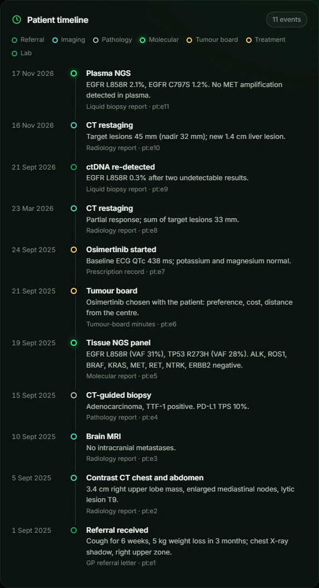</div>
      <figcaption><b>Fig. 1 — Rahela's timeline in OncoAgent,</b> newest first: referral, scans, biopsy, gene panel, tumour board, osimertinib, response, ctDNA return, progression and the plasma result. Each event carries its source document and an evidence ID. Fictional patient.</figcaption>
    </figure>
  </div>
  <div class="foot"><span class="l"><span class="star">✱</span><span class="word" style="font-size:13px">Datour<span class="x">X</span></span><span>OncoAgent · Submission book · 20 Nov 2026 · Public</span></span><span class="pg">P.05</span></div>
</section>

<!-- ============ P.06 THE EVENING ============ -->
<section class="sheet" id="p06" aria-label="The oncologist's evening of cross-checks">
  <div class="toprow"><span class="arrow"><svg viewBox="0 0 12 12" aria-hidden="true"><path d="M2 2 L10 10 M10 4 V10 H4" fill="none" stroke="currentColor" stroke-width="1.6"/></svg></span><span class="pill grey">Part 1 · Why</span><span class="pill">The cross-check</span><span class="pill tier">Public</span></div>
  <h1 class="h1">One question. <span class="g">Seven checks, seven sources.</span></h1>
  <p class="lead">To answer well, Rahela's oncologist pulls facts from seven places and checks each one by hand, in an evening after clinic, and then starts again for the next patient.</p>
  <div class="tbl"><table>
    <thead><tr><th style="width:34px">#</th><th>The check</th><th>Where the answer lives</th><th>If it is missed</th></tr></thead>
    <tbody>
      <tr><td>1</td><td>Is this progression?</td><td>Two radiology reports, measured by RECIST 1.1 against the lowest value</td><td>Treatment changed too early or too late</td></tr>
      <tr><td>2</td><td>What does C797S mean? Could plasma miss something?</td><td>The liquid-biopsy report and variant databases</td><td>The tumour may have changed type; only tissue shows it</td></tr>
      <tr><td>3</td><td>What are the options after osimertinib?</td><td>Guidelines and drug approvals</td><td>An outdated or later-line choice</td></tr>
      <tr><td>4</td><td>Is there a trial for C797S?</td><td>ClinicalTrials.gov, trial by trial</td><td>A trial she could join is never offered</td></tr>
      <tr><td>5</td><td>Is the next drug safe with her medicines?</td><td>Drug labels and interaction lists</td><td>QT prolongation with citalopram</td></tr>
      <tr><td>6</td><td>What dose?</td><td>Weight, height, a recent creatinine and label formulas</td><td>A dose error</td></tr>
      <tr><td>7</td><td>What goes to the tumour board?</td><td>A summary written by hand</td><td>Time taken from patients</td></tr>
    </tbody>
  </table></div>
  <div class="grid g2">
    <div class="card k"><h3>What one hospital measured</h3><p>Writing a tumour-board case summary took 20–30 minutes per case before AI help (Northside Hospital pilot, Roche summary, 2025).</p></div>
    <div class="card"><h3>What a general chatbot adds</h3><p>Answers from memory. Drug names, doses and trial numbers may be wrong, the sources cannot be checked, and nothing records who decided.</p></div>
  </div>
  <p class="quote">Each check is simple. <span class="g">Doing all seven, for every patient, every week, is the problem.</span></p>
  <div class="foot"><span class="l"><span class="star">✱</span><span class="word" style="font-size:13px">Datour<span class="x">X</span></span><span>OncoAgent · Submission book · 20 Nov 2026 · Public</span></span><span class="pg">P.06</span></div>
</section>

<!-- ============ P.07 THE SCALE ============ -->
<section class="sheet" id="p07" aria-label="The scale">
  <div class="toprow"><span class="arrow"><svg viewBox="0 0 12 12" aria-hidden="true"><path d="M2 2 L10 10 M10 4 V10 H4" fill="none" stroke="currentColor" stroke-width="1.6"/></svg></span><span class="pill grey">Part 1 · Why</span><span class="pill">The scale</span><span class="pill tier">Public</span></div>
  <h1 class="h1">167,256 new cases. <span class="g">About 22 medical oncologists.</span></h1>
  <div class="grid g4">
    <div class="card k"><span class="n">20M</span><p>new cancer cases worldwide, 2022</p></div>
    <div class="card"><span class="n">9.7M</span><p>cancer deaths worldwide, 2022</p></div>
    <div class="card"><span class="n">35.3M</span><p>new cases expected in 2050</p></div>
    <div class="card m"><span class="n">1.82M</span><p>lung cancer deaths: 18.7% of all, the most of any cancer</p></div>
  </div>
  <div class="card w">
    <h3>New cancer cases a year per medical oncologist</h3>
    <div class="bars" role="img" aria-label="Bangladesh about 7,603 new cases per medical oncologist; United States about 137">
      <div class="br"><span>Bangladesh</span><span class="tr"><span class="fl m" style="width:100%"></span></span><span class="v">≈ 7,603</span></div>
      <div class="br"><span>United States</span><span class="tr"><span class="fl" style="width:1.8%"></span></span><span class="v">≈ 137</span></div>
    </div>
    <p class="small">Bangladesh: 167,256 new cases ÷ about 22 medical oncologists (GLOBOCAN 2022; Financial Express, Feb 2026). United States: more than 2 million new cases ÷ 14,547 haematology/medical oncologists billing Medicare in 2024 (ACS 2026; ASCO, JCO OP 2025). Definitions differ, so this is a rough comparison. Counting Bangladesh's ~250 radiation oncologists as well still gives ≈ 615 new cases per specialist.</p>
  </div>
  <div class="tbl"><table>
    <thead><tr><th>Bangladesh</th><th>Figure</th><th>Source and note</th></tr></thead>
    <tbody>
      <tr><td>New cancer cases</td><td class="num">167,256 (2022)</td><td>GLOBOCAN 2022. No population-based registry, so the true burden is uncertain</td></tr>
      <tr><td>Cancer deaths</td><td class="num">116,598 (2022)</td><td>GLOBOCAN 2022</td></tr>
      <tr><td>Medical oncologists</td><td class="num">about 22</td><td>Financial Express, Feb 2026 (about 250 radiation oncologists)</td></tr>
      <tr><td>Cancer molecular labs</td><td class="num">one or two</td><td>Dedicated labs; samples often go to India. icddr,b began NGS cancer testing in April 2026</td></tr>
    </tbody>
  </table></div>
  <div class="foot"><span class="l"><span class="star">✱</span><span class="word" style="font-size:13px">Datour<span class="x">X</span></span><span>OncoAgent · Submission book · 20 Nov 2026 · Public</span></span><span class="pg">P.07</span></div>
</section>

<!-- ============ P.08 THE GAP ============ -->
<section class="sheet" id="p08" aria-label="The gap">
  <div class="toprow"><span class="arrow"><svg viewBox="0 0 12 12" aria-hidden="true"><path d="M2 2 L10 10 M10 4 V10 H4" fill="none" stroke="currentColor" stroke-width="1.6"/></svg></span><span class="pill grey">Part 1 · Why</span><span class="pill">The gap</span><span class="pill tier">Public</span></div>
  <h1 class="h1">The drugs exist. <span class="g">Too few patients reach them in time.</span></h1>
  <div class="side" style="--cols: minmax(0, 1fr) minmax(0, 2fr); align-items: stretch">
    <div class="card m"><span class="n">≈ 45%</span><p>of US NSCLC patients show evidence of biomarker testing before first-line therapy (JAMA Netw Open 2025). Without the test, a targeted drug cannot be chosen.</p></div>
    <div class="tbl tight"><table style="min-width:420px">
      <thead><tr><th>Where time or options are lost</th><th>Published figure</th></tr></thead>
      <tbody>
        <tr><td>Testing before first treatment</td><td>≈ 45% tested (US, 2025)</td></tr>
        <tr><td>Molecular labs in Bangladesh</td><td>One or two dedicated labs; samples often sent abroad</td></tr>
        <tr><td>Tumour-board case summary</td><td>20–30 minutes per case, by hand (one pilot)</td></tr>
        <tr><td>Trial eligibility</td><td>Checked criterion by criterion, trial by trial</td></tr>
        <tr><td>Resistance such as EGFR C797S</td><td>No approved targeted drug yet; several in early trials</td></tr>
      </tbody>
    </table></div>
  </div>
  <div class="card w">
    <h3>What AI has changed in published pilots by others (time for the same task, without AI = 100)</h3>
    <div class="bars" role="img" aria-label="Trial screening time 57.4 with TrialGPT versus 100 without; tumour-board summary about 55 with AI versus 100 without">
      <div class="br"><span>Trial screening · without</span><span class="tr"><span class="fl" style="width:100%"></span></span><span class="v">100</span></div>
      <div class="br"><span>Trial screening · TrialGPT</span><span class="tr"><span class="fl m" style="width:57.4%"></span></span><span class="v">57.4</span></div>
      <div class="br"><span>Board summary · without</span><span class="tr"><span class="fl" style="width:100%"></span></span><span class="v">100</span></div>
      <div class="br"><span>Board summary · with AI</span><span class="tr"><span class="fl m" style="width:55%"></span></span><span class="v">≈ 55</span></div>
    </div>
    <p class="small">TrialGPT (Nature Communications 2024): 42.6% less screening time, 87.3% criterion accuracy. Tumour-board summaries: 20–30 → 10–15 minutes per case, with some inaccuracies (Northside Hospital pilot, Roche summary, 2025). Both are small pilots and neither is an OncoAgent result.</p>
  </div>
  <div class="grid g2">
    <div class="card"><h3>What doctors are missing</h3><p>One place that gathers the facts, checks them against current evidence and lays out the reasons, ready for the doctor to review.</p></div>
    <div class="card k"><h3>What must not change</h3><p>The doctor decides and signs. The patient's values, the cost and the hard conversations stay with the clinical team.</p></div>
  </div>
  <div class="foot"><span class="l"><span class="star">✱</span><span class="word" style="font-size:13px">Datour<span class="x">X</span></span><span>OncoAgent · Submission book · 20 Nov 2026 · Public</span></span><span class="pg">P.08</span></div>
</section>

<!-- ============ P.09 WHY LUNG FIRST ============ -->
<section class="sheet" id="p09" aria-label="Why lung cancer first">
  <div class="toprow"><span class="arrow"><svg viewBox="0 0 12 12" aria-hidden="true"><path d="M2 2 L10 10 M10 4 V10 H4" fill="none" stroke="currentColor" stroke-width="1.6"/></svg></span><span class="pill grey">Part 1 · Why</span><span class="pill">Where we start</span><span class="pill tier">Public</span></div>
  <h1 class="h1">Start where the data is. <span class="g">Lung cancer has the most.</span></h1>
  <div class="tbl"><table>
    <thead><tr><th>Criterion</th><th>Lung (NSCLC)</th><th>Breast</th><th>Colorectal</th></tr></thead>
    <tbody>
      <tr><td>AACR GENIE genomic samples</td><td class="num"><b>38,000+</b></td><td class="num">21,000+</td><td class="num">23,000+</td></tr>
      <tr><td>New cases worldwide, 2022</td><td class="num"><b>2.48M (#1)</b></td><td class="num">2.31M</td><td class="num">1.93M</td></tr>
      <tr><td>Actionable drivers</td><td><b>40–60% of adenocarcinomas</b>: EGFR, ALK, ROS1, BRAF, KRAS G12C, MET, RET, NTRK, HER2</td><td>HR, HER2, PIK3CA, BRCA</td><td>KRAS, BRAF, MSI, HER2</td></tr>
      <tr><td>Targeted approvals</td><td><b>≈ 30 new drugs since 2011</b>; 7 in 2024</td><td>Many, mostly HR/HER2</td><td>Fewer</td></tr>
      <tr><td>Open omics and imaging</td><td><b>TCGA, CPTAC proteogenomics (~110 tumours), NLST CT (26,254 people)</b></td><td>TCGA, METABRIC</td><td>TCGA</td></tr>
      <tr><td>Resistance and 3D structures</td><td><b>Mapped in depth</b>: EGFR T790M, C797S, ALK</td><td>Moderate</td><td>Moderate</td></tr>
      <tr><td>Bangladesh</td><td>Top-3 male cancer; in icddr,b NGS</td><td><b>#1 female cancer</b></td><td>In icddr,b NGS</td></tr>
    </tbody>
  </table></div>
  <div class="grid g3">
    <div class="card m"><span class="small" style="color:#1d3b2a">First · now</span><h3>Lung (NSCLC)</h3><p>Best data, most targeted drugs, clearest protein story.</p></div>
    <div class="card"><span class="small">Second · months 8–14</span><h3>Breast</h3><p>The first cancer of women in Bangladesh.</p></div>
    <div class="card"><span class="small">Third · months 14–30</span><h3>Colorectal</h3><p>Same modules, new rules and gold cases.</p></div>
  </div>
  <p class="small">EGFR mutation prevalence: Asia pooled 38.4%; India 20–39.6% by region; Bangladesh single-centre data lies between Western and East-Asian rates. Every module is cancer-agnostic: a new cancer is clinical rules, knowledge-pack entries and gold cases, not a rewrite. Sources: AACR GENIE 2025, GLOBOCAN 2022, published reviews; see P.53.</p>
  <div class="foot"><span class="l"><span class="star">✱</span><span class="word" style="font-size:13px">Datour<span class="x">X</span></span><span>OncoAgent · Submission book · 20 Nov 2026 · Public</span></span><span class="pg">P.09</span></div>
</section>

<!-- ======================= PART 2 · WHAT WE BUILT ======================= -->

<!-- ============ P.10 PART 2 ============ -->
<section class="sheet dark" id="p10" aria-label="Part 2: What we built">
  <div class="div-top"><div class="toprow"><span class="pill">Part 2</span><span class="pill tier">Public</span></div><span class="div-num">02</span></div>
  <p class="div-sub">A tour of the live MVP (v0.3), following Rahela's case from her record to a signed decision, then a case a doctor enters by hand. Every screen here runs today at oncoagent.vercel.app.</p>
  <div class="div-pages"><a href="#p11"><b>P.11</b>The workspace</a><a href="#p12"><b>P.12</b>Rahela's record</a><a href="#p13"><b>P.13</b>The agent run</a><a href="#p14"><b>P.14</b>Recommendation cards</a><a href="#p15"><b>P.15</b>Evidence</a><a href="#p16"><b>P.16</b>The dose card</a><a href="#p17"><b>P.17</b>Sign-off and log</a><a href="#p18"><b>P.18</b>Decision queue</a><a href="#p19"><b>P.19</b>Tumour-board report</a><a href="#p20"><b>P.20</b>3D structure</a><a href="#p21"><b>P.21</b>MCP and mobile</a><a href="#p22"><b>P.22</b>End to end</a><a href="#p23"><b>P.23</b>Enter your own case</a><a href="#p24"><b>P.24</b>A second example</a></div>
  <div class="div-bot"><span class="nm">What we built</span><span class="arrow" style="width:46px;height:46px"><svg viewBox="0 0 12 12" aria-hidden="true"><path d="M10 2 L2 10 M2 4 V10 H8" fill="none" stroke="currentColor" stroke-width="1.4"/></svg></span></div>
  <div class="foot"><span class="l"><span class="star">✱</span><span class="word" style="font-size:13px">Datour<span class="x">X</span></span><span>OncoAgent · Submission book · 20 Nov 2026 · Public</span></span><span class="pg">P.10</span></div>
</section>

<!-- ============ P.11 THE WORKSPACE ============ -->
<section class="sheet" id="p11" aria-label="The workspace">
  <div class="toprow"><span class="arrow"><svg viewBox="0 0 12 12" aria-hidden="true"><path d="M2 2 L10 10 M10 4 V10 H4" fill="none" stroke="currentColor" stroke-width="1.6"/></svg></span><span class="pill grey">Part 2 · What we built</span><span class="pill">The workspace</span><span class="st built">Built</span></div>
  <h1 class="h1">One workspace <span class="g">for the oncologist and the team.</span></h1>
  <figure class="fig">
    <div class="shot">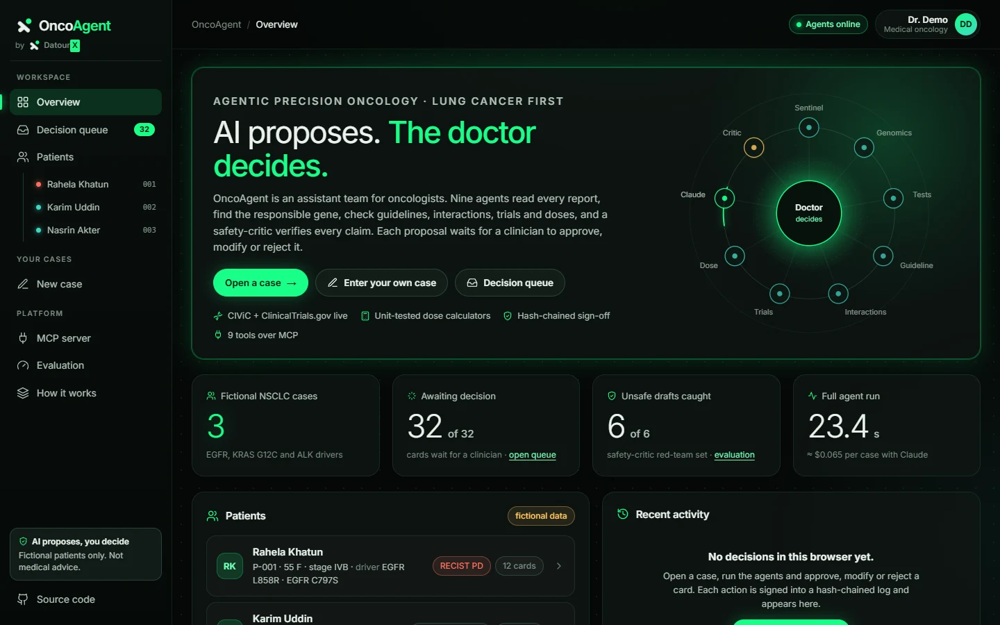</div>
    <figcaption><b>Fig. 2 — The overview.</b> The agents circle the doctor, who decides. Tiles show the fictional cases, cards awaiting a decision, the critic's red-team score and the run time. The sidebar leads to the decision queue, each patient, the MCP server, the evaluation and how it works.</figcaption>
  </figure>
  <div class="grid g2">
    <div class="card"><div class="hd"><h3>Screens in v0.3</h3><span class="st built">Built</span></div><ul><li>Overview and patient list</li><li>Patient record (P.12)</li><li>Case intake: enter your own de-identified case (<span data-ref="p23">P.23</span>)</li><li>Decision queue with in-place sign-off (P.18)</li><li>Printable tumour-board report (P.19)</li><li>MCP server page with an in-browser tool tester (P.21)</li><li>Evaluation (P.37) and How it works</li></ul></div>
    <div class="card k"><div class="hd"><h3>On every page</h3><span class="st built">Built</span></div><ul><li>Live status: on page load the top bar checks that Claude is configured and that CIViC and ClinicalTrials.gov answer</li><li>Agents fall back to dated snapshots, never to empty data</li><li>A standing notice: fictional patients only, not medical advice</li><li>Doctor-only: there is no patient app and no patient-facing message</li></ul></div>
  </div>
  <div class="foot"><span class="l"><span class="star">✱</span><span class="word" style="font-size:13px">Datour<span class="x">X</span></span><span>OncoAgent · Submission book · 20 Nov 2026 · Public</span></span><span class="pg">P.11</span></div>
</section>

<!-- ============ P.12 RAHELA'S RECORD ============ -->
<section class="sheet" id="p12" aria-label="Rahela's record and the three fictional patients">
  <div class="toprow"><span class="arrow"><svg viewBox="0 0 12 12" aria-hidden="true"><path d="M2 2 L10 10 M10 4 V10 H4" fill="none" stroke="currentColor" stroke-width="1.6"/></svg></span><span class="pill grey">Part 2 · What we built</span><span class="pill">The patient record</span><span class="st built">Built</span></div>
  <h1 class="h1">Rahela's record, <span class="g">and the question for the agents.</span></h1>
  <figure class="fig">
    <div class="shot">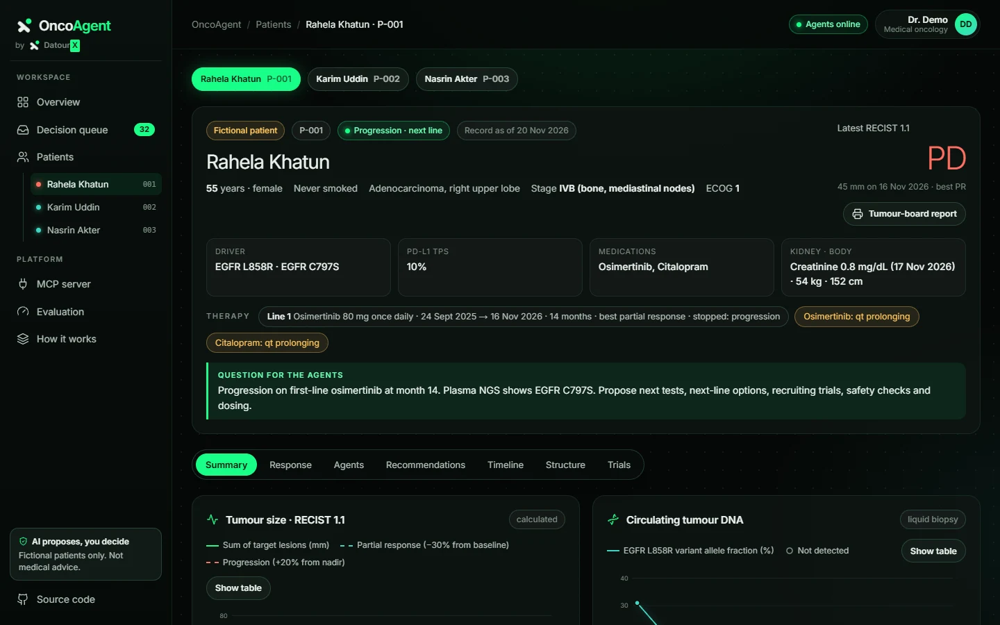</div>
    <figcaption><b>Fig. 3 — Rahela's record (P-001).</b> Driver and resistance changes, medicines with their QT flags, creatinine and body size, the current therapy line and the question for the agents. Tabs lead to the summary, response charts (RECIST 1.1 and ctDNA), the agent run, cards with the evidence drawer and dose card, the audit log, the timeline, the molecular profile against a 10-marker panel, the 3D structure and recruiting trials.</figcaption>
  </figure>
  <div class="tbl"><table>
    <thead><tr><th style="width:190px">Fictional patient</th><th style="width:190px">Molecular driver</th><th>The hard decision built into the case</th></tr></thead>
    <tbody>
      <tr><td>P-001 Rahela Khatun<br><span class="small">55 · female · never smoked</span></td><td>EGFR L858R; plasma EGFR C797S</td><td>Progression on first-line osimertinib at month 14 (45 mm vs 32 mm nadir, new liver lesion). Takes citalopram, so there is a QT interaction.</td></tr>
      <tr><td>P-002 Karim Uddin<br><span class="small">61 · male</span></td><td>KRAS G12C; PD-L1 60%</td><td>First-line decision.</td></tr>
      <tr><td>P-003 Nasrin Akter<br><span class="small">45 · female · never smoked</span></td><td>EML4::ALK fusion; brain metastases</td><td>Takes carbamazepine, a strong CYP3A inducer, so lorlatinib is contraindicated while she takes it.</td></tr>
    </tbody>
  </table></div>
  <div class="foot"><span class="l"><span class="star">✱</span><span class="word" style="font-size:13px">Datour<span class="x">X</span></span><span>OncoAgent · Submission book · 20 Nov 2026 · Public</span></span><span class="pg">P.12</span></div>
</section>

<!-- ============ P.13 THE AGENT RUN ============ -->
<section class="sheet" id="p13" aria-label="The agent run">
  <div class="toprow"><span class="arrow"><svg viewBox="0 0 12 12" aria-hidden="true"><path d="M2 2 L10 10 M10 4 V10 H4" fill="none" stroke="currentColor" stroke-width="1.6"/></svg></span><span class="pill grey">Part 2 · What we built</span><span class="pill">The agent run</span><span class="st built">Built</span></div>
  <h1 class="h1">Nine agents, <span class="g">about 23 seconds.</span></h1>
  <figure class="fig">
    <div class="shot">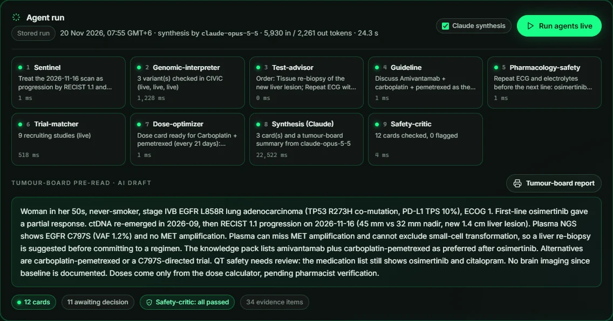</div>
    <figcaption><b>Fig. 4 — A stored run for Rahela.</b> Each tile shows the agent, its finding and its time. The header shows the pinned model, tokens and total time; the AI-drafted tumour-board pre-read follows. "Run agents live" starts a new run, with Claude synthesis on or off.</figcaption>
  </figure>
  <div class="tbl tight"><table>
    <thead><tr><th style="width:190px">Agent</th><th>What it reported for Rahela</th></tr></thead>
    <tbody>
      <tr><td>1 · Sentinel</td><td>Treat the 16 Nov 2026 scan as progression by RECIST 1.1: 45 mm against a 32 mm nadir, with a new liver lesion</td></tr>
      <tr><td>2 · Genomic-interpreter</td><td>Her variants checked against CIViC, live</td></tr>
      <tr><td>3 · Test-advisor</td><td>Tissue re-biopsy of the new liver lesion; repeat ECG</td></tr>
      <tr><td>4 · Guideline</td><td>Discuss amivantamab + carboplatin + pemetrexed, listed as preferred after osimertinib in the knowledge pack</td></tr>
      <tr><td>5 · Pharmacology-safety</td><td>Repeat ECG and electrolytes before the next line: osimertinib and citalopram both prolong QT</td></tr>
      <tr><td>6 · Trial-matcher</td><td>Recruiting studies from ClinicalTrials.gov, live</td></tr>
      <tr><td>7 · Dose-optimizer</td><td>Dose card ready for carboplatin + pemetrexed, every 21 days</td></tr>
      <tr><td>8 · Synthesis (Claude)</td><td>Tumour-board pre-read and cards, written from de-identified input</td></tr>
      <tr><td>9 · Safety-critic</td><td>Every card checked; none flagged in this run</td></tr>
    </tbody>
  </table></div>
  <p class="small">Stored runs show by default. Live Claude runs are limited to 6 per 10 minutes per visitor and are kept in the browser for the next visit; rules-only runs are free. Mean full run with Claude: 23.4 s, about US$0.065 per case.</p>
  <div class="foot"><span class="l"><span class="star">✱</span><span class="word" style="font-size:13px">Datour<span class="x">X</span></span><span>OncoAgent · Submission book · 20 Nov 2026 · Public</span></span><span class="pg">P.13</span></div>
</section>

<!-- ============ P.14 RECOMMENDATION CARDS ============ -->
<section class="sheet" id="p14" aria-label="Recommendation cards">
  <div class="toprow"><span class="arrow"><svg viewBox="0 0 12 12" aria-hidden="true"><path d="M2 2 L10 10 M10 4 V10 H4" fill="none" stroke="currentColor" stroke-width="1.6"/></svg></span><span class="pill grey">Part 2 · What we built</span><span class="pill">Recommendation cards</span><span class="st built">Built</span></div>
  <h1 class="h1">Every proposal is a card <span class="g">that shows its reasons.</span></h1>
  <div class="side" style="--cols: minmax(0, 1.3fr) minmax(0, 1fr)">
    <figure class="fig">
      <div class="shot crop" style="aspect-ratio: 640 / 800"></div>
      <figcaption><b>Fig. 5 — Rahela's first two cards</b> (detail). The treatment card is already approved, with the doctor's note; the re-biopsy card waits for a decision.</figcaption>
    </figure>
    <div class="stack">
      <div class="card w"><h3>Every card carries</h3><ul><li>The proposal</li><li>Why: the patient facts used</li><li>Evidence IDs</li><li>Confidence, with its reason</li><li>What is uncertain</li><li>Alternatives</li><li>What would change the advice</li><li>Safety notes</li><li>The safety-critic's verdict</li></ul></div>
      <p class="body">Cards can be filtered by kind: treatment, tests, safety, trials, dose, molecular and monitoring. Approve, Modify and Reject sit on every card. Nothing acts on a patient until a clinician approves.</p>
    </div>
  </div>
  <div class="tbl tight"><table>
    <thead><tr><th style="width:80px">Kind</th><th>Rahela's card, as drafted</th><th style="width:96px">Confidence</th></tr></thead>
    <tbody>
      <tr><td>Treatment</td><td>Consider amivantamab plus carboplatin and pemetrexed as the leading second-line option, with early screening for a C797S-directed trial in parallel, once re-biopsy has excluded histological transformation.</td><td>Moderate</td></tr>
      <tr><td>Test</td><td>Tissue re-biopsy of the new liver lesion with histology and NGS; consider updated brain imaging, since the only brain MRI is from baseline.</td><td>High</td></tr>
      <tr><td>Safety</td><td>Repeat ECG with potassium and magnesium before the next line, and review the ongoing citalopram with continued ECG monitoring.</td><td>High</td></tr>
    </tbody>
  </table></div>
  <div class="foot"><span class="l"><span class="star">✱</span><span class="word" style="font-size:13px">Datour<span class="x">X</span></span><span>OncoAgent · Submission book · 20 Nov 2026 · Public</span></span><span class="pg">P.14</span></div>
</section>

<!-- ============ P.15 EVIDENCE ============ -->
<section class="sheet" id="p15" aria-label="Evidence behind every card">
  <div class="toprow"><span class="arrow"><svg viewBox="0 0 12 12" aria-hidden="true"><path d="M2 2 L10 10 M10 4 V10 H4" fill="none" stroke="currentColor" stroke-width="1.6"/></svg></span><span class="pill grey">Part 2 · What we built</span><span class="pill">Evidence</span><span class="st built">Built</span></div>
  <h1 class="h1">Every claim points <span class="g">to a source you can open.</span></h1>
  <div class="side" style="--cols: minmax(0, 1.45fr) minmax(0, 1fr)">
    <div class="stack" style="gap:18px">
      <p class="lead">Open a card's sources and a drawer lists the evidence behind it. Each item has an ID, a date and its source document.</p>
      <div class="tbl tight"><table style="min-width:380px">
        <thead><tr><th>Kind of evidence</th><th>Example in Rahela's run</th></tr></thead>
        <tbody>
          <tr><td>Patient record</td><td><code>pt:e10</code> CT restaging, 16 Nov 2026 (radiology report)</td></tr>
          <tr><td>Knowledge pack</td><td><code>kb:egfr2-amivantamab-chemo</code>, pack version 2026-11-20, with a link to the source</td></tr>
          <tr><td>CIViC</td><td>Evidence items for her variants, fetched live (CC0)</td></tr>
          <tr><td>Trials</td><td>NCT numbers returned by ClinicalTrials.gov</td></tr>
          <tr><td>Drug labels</td><td>Dose parameters (DailyMed)</td></tr>
          <tr><td>Calculators</td><td>BSA, creatinine clearance and Calvert results</td></tr>
        </tbody>
      </table></div>
      <div class="card k"><h3>The rule</h3><p>Every claim on a card must cite one of these IDs. The safety-critic flags any ID that is not in the run's evidence registry, and any trial number the registry did not return.</p></div>
      <p class="note">Each run builds one evidence registry. Agents add what they find; the model may only cite from it.</p>
    </div>
    <figure class="fig">
      <div class="shot crop" style="aspect-ratio: 459 / 900">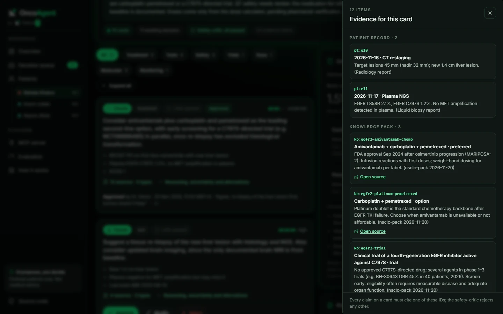</div>
      <figcaption><b>Fig. 6 — The evidence drawer</b> for Rahela's treatment card (detail): patient-record events, then knowledge-pack entries with their version and an "Open source" link.</figcaption>
    </figure>
  </div>
  <div class="foot"><span class="l"><span class="star">✱</span><span class="word" style="font-size:13px">Datour<span class="x">X</span></span><span>OncoAgent · Submission book · 20 Nov 2026 · Public</span></span><span class="pg">P.15</span></div>
</section>

<!-- ============ P.16 DOSE CARD ============ -->
<section class="sheet" id="p16" aria-label="The dose card">
  <div class="toprow"><span class="arrow"><svg viewBox="0 0 12 12" aria-hidden="true"><path d="M2 2 L10 10 M10 4 V10 H4" fill="none" stroke="currentColor" stroke-width="1.6"/></svg></span><span class="pill grey">Part 2 · What we built</span><span class="pill">The dose card</span><span class="st built">Built</span></div>
  <h1 class="h1">Doses come from code. <span class="g">A pharmacist verifies.</span></h1>
  <div class="side" style="--cols: minmax(0, 1fr) minmax(0, 1.2fr)">
    <figure class="fig">
      <div class="shot crop" style="aspect-ratio: 512 / 700"></div>
      <figcaption><b>Fig. 7 — Rahela's dose card</b> (detail of the same screen as Fig. 5): carboplatin and pemetrexed on day 1 every 21 days, each with its formula and label, and the premedication the pemetrexed label calls for.</figcaption>
    </figure>
    <div class="stack" style="gap:18px">
      <div class="tbl tight"><table style="min-width:400px">
        <thead><tr><th>Quantity</th><th>Formula</th><th>Rahela</th></tr></thead>
        <tbody>
          <tr><td>BSA</td><td>Mosteller</td><td class="num">1.51 m²</td></tr>
          <tr><td>CrCl</td><td>Cockcroft–Gault, ×0.85 for female</td><td class="num">67.7 mL/min</td></tr>
          <tr><td>Carboplatin</td><td>Calvert, AUC 5: 5 × (GFR + 25), GFR capped at 125</td><td>5 × (67.7 + 25) = 463.7, so <b>460 mg</b></td></tr>
          <tr><td>Pemetrexed</td><td>500 mg/m² × BSA</td><td>500 × 1.51 = 755, so <b>750 mg</b></td></tr>
        </tbody>
      </table></div>
      <div class="card k"><h3>Blocking rules</h3><ul><li>A creatinine more than 7 days old blocks the dose card</li><li>A CrCl below 45 mL/min blocks pemetrexed</li><li>A blocked dose card withholds the dose amounts</li><li>The language model never writes a dose; a pharmacist verifies before prescribing</li></ul></div>
      <p class="note">Weight, height and creatinine come from the record. CrCl is the GFR estimate in the Calvert formula, capped at 125 mL/min. Other drugs use BSA, fixed, weight-band or per-kg label doses (<span data-ref="p29">P.29</span>).</p>
    </div>
  </div>
  <div class="grid g3">
    <div class="card w"><span class="n">167</span><p>unit tests in total: dosing, RECIST, pack selection, report reader</p></div>
    <div class="card w"><span class="n">3/3</span><p>doses exactly as hand-calculated in the evaluation</p></div>
    <div class="card m"><span class="n">0</span><p>doses written outside the calculator</p></div>
  </div>
  <div class="foot"><span class="l"><span class="star">✱</span><span class="word" style="font-size:13px">Datour<span class="x">X</span></span><span>OncoAgent · Submission book · 20 Nov 2026 · Public</span></span><span class="pg">P.16</span></div>
</section>

<!-- ============ P.17 SIGN-OFF ============ -->
<section class="sheet" id="p17" aria-label="Sign-off and the hash-chained log">
  <div class="toprow"><span class="arrow"><svg viewBox="0 0 12 12" aria-hidden="true"><path d="M2 2 L10 10 M10 4 V10 H4" fill="none" stroke="currentColor" stroke-width="1.6"/></svg></span><span class="pill grey">Part 2 · What we built</span><span class="pill">Sign-off</span><span class="st built">Built</span></div>
  <h1 class="h1">The doctor signs. <span class="g">The log cannot be quietly rewritten.</span></h1>
  <div class="side" style="--cols: minmax(0, 1.2fr) minmax(0, 1fr)">
    <figure class="fig">
      <div class="shot crop" style="aspect-ratio: 600 / 500">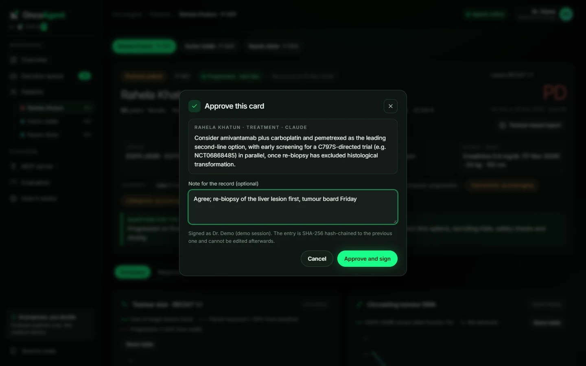</div>
      <figcaption><b>Fig. 8 — Approving Rahela's treatment card.</b> The note reads "Agree; re-biopsy of the liver lesion first, tumour board Friday." Signed as Dr. Demo in a demo session.</figcaption>
    </figure>
    <div class="card w"><h3>How a decision is recorded</h3><ul><li>Approve, modify or reject on every card</li><li>A reason is required to modify or reject; a note is optional to approve</li><li>Each entry records who, what, when and why</li><li>Approving a card the safety-critic flagged needs an explicit acknowledgement and a reason</li><li>Each entry is SHA-256 hash-chained to the one before and cannot be edited afterwards</li><li>The same rules apply in the record and in the decision queue</li></ul></div>
  </div>
  <div class="stack" style="gap:10px">
    <h3>The hash chain, in three entries</h3>
    <div class="chain" role="img" aria-label="Three audit entries; each stores the previous entry's hash and its own hash">
      <div class="blk"><b>Entry 1 · approve</b><span>Who, card, action, note, time</span><span class="h">prev = 000…0</span><span class="h">hash 1 = SHA-256(entry 1)</span></div>
      <div class="blk"><b>Entry 2 · modify</b><span>Who, card, action, reason, time</span><span class="h">prev = hash 1</span><span class="h">hash 2 = SHA-256(entry 2)</span></div>
      <div class="blk"><b>Entry 3 · reject</b><span>Who, card, action, reason, time</span><span class="h">prev = hash 2</span><span class="h">hash 3 = SHA-256(entry 3)</span></div>
    </div>
    <p class="small">Change any old entry and every later hash stops matching. The record page re-checks the whole chain when it loads.</p>
  </div>
  <div class="grid g2">
    <div class="card"><div class="hd"><h3>In the demo</h3><span class="st built">Built</span></div><p>The log and live runs are stored in this browser, so each visitor sees only their own decisions.</p></div>
    <div class="card"><div class="hd"><h3>In production</h3><span class="st design">Designed</span></div><p>The same rows, and the live runs, are stored server-side in an append-only table.</p></div>
  </div>
  <div class="foot"><span class="l"><span class="star">✱</span><span class="word" style="font-size:13px">Datour<span class="x">X</span></span><span>OncoAgent · Submission book · 20 Nov 2026 · Public</span></span><span class="pg">P.17</span></div>
</section>

<!-- ============ P.18 DECISION QUEUE ============ -->
<section class="sheet" id="p18" aria-label="Decision queue">
  <div class="toprow"><span class="arrow"><svg viewBox="0 0 12 12" aria-hidden="true"><path d="M2 2 L10 10 M10 4 V10 H4" fill="none" stroke="currentColor" stroke-width="1.6"/></svg></span><span class="pill grey">Part 2 · What we built</span><span class="pill">Decision queue</span><span class="st built">Built</span></div>
  <h1 class="h1">Every waiting card, <span class="g">flagged ones first.</span></h1>
  <figure class="fig">
    <div class="shot">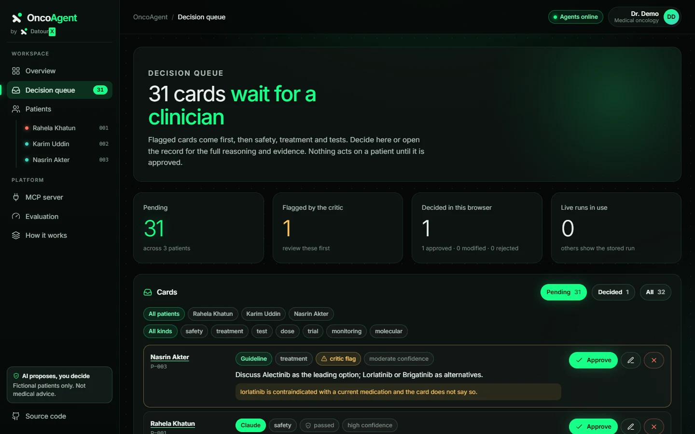</div>
    <figcaption><b>Fig. 9 — The decision queue</b> across all three fictional patients. A Guideline card for Nasrin Akter (P-003), flagged by the safety-critic, sits at the top (see P.36).</figcaption>
  </figure>
  <div class="grid g3">
    <div class="card k"><h3>Ordered for safety</h3><p>Flagged cards come first, then safety, treatment and tests, so the riskiest item is read first.</p></div>
    <div class="card"><h3>Decide in place</h3><p>Approve, modify or reject straight from the queue, with the same reason rules and the same hash-chained log.</p></div>
    <div class="card"><h3>Or open the record</h3><p>Filter by patient or kind, then open the record for the full reasoning and evidence.</p></div>
  </div>
  <p class="note">The queue replaces interruptions: only the cards wait, ranked, until a clinician has time to decide.</p>
  <div class="foot"><span class="l"><span class="star">✱</span><span class="word" style="font-size:13px">Datour<span class="x">X</span></span><span>OncoAgent · Submission book · 20 Nov 2026 · Public</span></span><span class="pg">P.18</span></div>
</section>

<!-- ============ P.19 TUMOUR-BOARD REPORT ============ -->
<section class="sheet" id="p19" aria-label="Tumour-board report">
  <div class="toprow"><span class="arrow"><svg viewBox="0 0 12 12" aria-hidden="true"><path d="M2 2 L10 10 M10 4 V10 H4" fill="none" stroke="currentColor" stroke-width="1.6"/></svg></span><span class="pill grey">Part 2 · What we built</span><span class="pill">Tumour-board report</span><span class="st built">Built</span></div>
  <h1 class="h1">A pre-read for the board, <span class="g">ready to print.</span></h1>
  <figure class="fig">
    <div class="shot">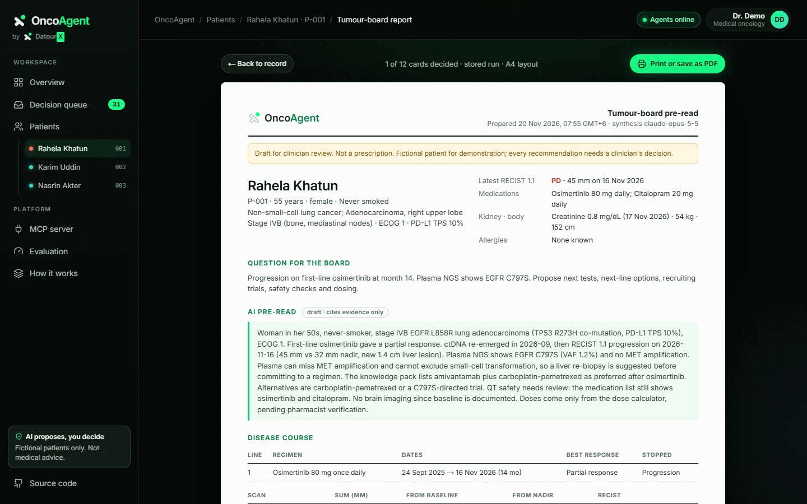</div>
    <figcaption><b>Fig. 10 — Rahela's tumour-board report,</b> an A4 page that prints or saves as PDF. Live example: <a href="https://oncoagent.vercel.app/patients/P-001/report" style="white-space:nowrap">oncoagent.vercel.app/patients/P-001/report</a></figcaption>
  </figure>
  <div class="grid g3">
    <div class="card"><h3>Marked as a draft</h3><p>A banner says it is for clinician review and is not a prescription, and that the patient is fictional.</p></div>
    <div class="card"><h3>What it holds</h3><p>Patient summary, the question for the board, the AI pre-read (cites evidence only), disease course and scans, and the cards with decisions so far.</p></div>
    <div class="card k"><h3>Why a pre-read</h3><p>In one published pilot, AI-drafted summaries cut preparation from 20–30 to 10–15 minutes per case, with some inaccuracies (Roche summary, 2025). That is not an OncoAgent result.</p></div>
  </div>
  <div class="foot"><span class="l"><span class="star">✱</span><span class="word" style="font-size:13px">Datour<span class="x">X</span></span><span>OncoAgent · Submission book · 20 Nov 2026 · Public</span></span><span class="pg">P.19</span></div>
</section>

<!-- ============ P.20 3D STRUCTURE ============ -->
<section class="sheet" id="p20" aria-label="3D structure insight">
  <div class="toprow"><span class="arrow"><svg viewBox="0 0 12 12" aria-hidden="true"><path d="M2 2 L10 10 M10 4 V10 H4" fill="none" stroke="currentColor" stroke-width="1.6"/></svg></span><span class="pill grey">Part 2 · What we built</span><span class="pill">Structure insight</span><span class="st built">Built</span></div>
  <h1 class="h1">Why the drug stopped working, <span class="g">in 3D.</span></h1>
  <div class="side" style="--cols: minmax(0, 1.15fr) minmax(0, 1fr)">
    <figure class="fig">
      <div class="shot">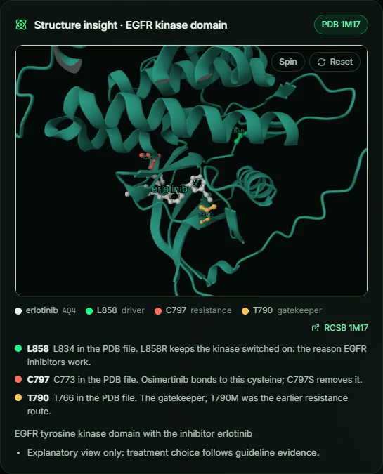</div>
      <figcaption><b>Fig. 11 — EGFR kinase domain with erlotinib</b> (PDB 1M17). L858 driver, C797 resistance and T790 gatekeeper are highlighted. Explanatory view only.</figcaption>
    </figure>
    <div class="stack" style="gap:16px">
      <p class="lead">The structure tab shows the drug in its pocket, with the clinically relevant residues highlighted. It uses Mol* 4.18 with MolViewSpec scenes and structures from RCSB PDB.</p>
      <p class="body">For Rahela it shows three residues: L858, the driver; C797, where osimertinib binds and which C797S removes; and T790, the gatekeeper behind an earlier resistance route. A doctor can show the tumour board why the drug stopped working.</p>
      <div class="card w"><h3>Checked, and kept in its place</h3><ul><li>Residue numbers were checked against each PDB file</li><li>The view explains; treatment choice follows guideline evidence</li><li>It never suggests a new molecule</li></ul></div>
    </div>
  </div>
  <div class="tbl tight"><table>
    <thead><tr><th>PDB</th><th>Protein and drug</th><th>Residues highlighted</th><th>Fictional patient</th></tr></thead>
    <tbody>
      <tr><td>1M17</td><td>EGFR kinase + erlotinib</td><td>L858, C797, T790</td><td>P-001 Rahela Khatun</td></tr>
      <tr><td>6OIM</td><td>KRAS G12C + sotorasib</td><td>C12</td><td>P-002 Karim Uddin</td></tr>
      <tr><td>2XP2</td><td>ALK + crizotinib</td><td>L1196, G1202</td><td>P-003 Nasrin Akter</td></tr>
    </tbody>
  </table></div>
  <div class="foot"><span class="l"><span class="star">✱</span><span class="word" style="font-size:13px">Datour<span class="x">X</span></span><span>OncoAgent · Submission book · 20 Nov 2026 · Public</span></span><span class="pg">P.20</span></div>
</section>

<!-- ============ P.21 MCP TESTER AND MOBILE ============ -->
<section class="sheet" id="p21" aria-label="MCP tester and mobile">
  <div class="toprow"><span class="arrow"><svg viewBox="0 0 12 12" aria-hidden="true"><path d="M2 2 L10 10 M10 4 V10 H4" fill="none" stroke="currentColor" stroke-width="1.6"/></svg></span><span class="pill grey">Part 2 · What we built</span><span class="pill">MCP and mobile</span><span class="st built">Built</span></div>
  <h1 class="h1">Two more ways in: <span class="g">any MCP client, and a phone.</span></h1>
  <figure class="fig">
    <div class="shot crop" style="aspect-ratio: 1136 / 480"></div>
    <figcaption><b>Fig. 12 — The in-browser MCP tester</b> (detail) calls the deployed endpoint exactly as an MCP client would. Here <code>interpret_variant</code> returns live CIViC lung evidence for EGFR C797S.</figcaption>
  </figure>
  <div class="side" style="--cols: minmax(0, 1fr) minmax(0, 2.3fr)">
    <figure class="fig narrow">
      <div class="shot crop" style="aspect-ratio: 780 / 1200"></div>
      <figcaption><b>Fig. 13 — Rahela's record on a phone screen</b> (top of the page).</figcaption>
    </figure>
    <div class="stack" style="gap:14px">
      <div class="card w"><h3>MCP: try every tool in the browser</h3><p>The MCP server page lists all nine tools. Pick one, edit the JSON arguments and call it over Streamable HTTP. The same tools answer any MCP client over HTTP or stdio (P.30). Live Claude runs through MCP are capped at 10 per hour.</p></div>
      <div class="card w"><h3>Mobile: the same record on a phone</h3><p>Navigation moves to a top bar and the panels stack in one column, for a ward round or a meeting room. Still doctor-only, and every record carries a badge: fictional patient or de-identified entered case.</p></div>
    </div>
  </div>
  <div class="foot"><span class="l"><span class="star">✱</span><span class="word" style="font-size:13px">Datour<span class="x">X</span></span><span>OncoAgent · Submission book · 20 Nov 2026 · Public</span></span><span class="pg">P.21</span></div>
</section>

<!-- ============ P.22 END TO END ============ -->
<section class="sheet" id="p22" aria-label="Rahela's case, end to end">
  <div class="toprow"><span class="arrow"><svg viewBox="0 0 12 12" aria-hidden="true"><path d="M2 2 L10 10 M10 4 V10 H4" fill="none" stroke="currentColor" stroke-width="1.6"/></svg></span><span class="pill grey">Part 2 · What we built</span><span class="pill">End to end</span><span class="pill tier">Public</span></div>
  <h1 class="h1">Rahela's case, <span class="g">from record to signature.</span></h1>
  <div class="tbl"><table>
    <thead><tr><th style="width:116px">Step</th><th>What OncoAgent shows</th><th style="width:150px">Who decides</th><th style="width:46px">Fig.</th></tr></thead>
    <tbody>
      <tr><td>1 · Record</td><td>Progression by RECIST 1.1: 45 mm against a 32 mm nadir, new liver lesion; plasma EGFR C797S</td><td>Oncologist reviews</td><td class="num">3</td></tr>
      <tr><td>2 · Agent run</td><td>Nine agents, about 23 seconds with Claude; stored or live</td><td>Oncologist starts it</td><td class="num">4</td></tr>
      <tr><td>3 · Test</td><td>Re-biopsy the new liver lesion before choosing a regimen: plasma can miss other resistance routes and cannot exclude a change of tumour type</td><td>Oncologist</td><td class="num">5</td></tr>
      <tr><td>4 · Safety</td><td>QT warning: osimertinib and citalopram both prolong QT. Repeat ECG and electrolytes; review citalopram</td><td>Oncologist, pharmacist</td><td class="num">5</td></tr>
      <tr><td>5 · Treatment</td><td>Amivantamab + carboplatin + pemetrexed, with screening for a C797S-directed trial in parallel</td><td>Oncologist, tumour board</td><td class="num">5, 8</td></tr>
      <tr><td>6 · Trials</td><td>Recruiting trials from ClinicalTrials.gov, fetched live</td><td>Oncologist, trial team</td><td class="num">4</td></tr>
      <tr><td>7 · Dose</td><td>Carboplatin 460 mg from 5 × (67.7 + 25) = 463.7; pemetrexed 750 mg from 500 × 1.51 m² = 755</td><td>Pharmacist verifies, oncologist signs</td><td class="num">7</td></tr>
      <tr><td>8 · Board</td><td>Printable pre-read with the cards and the decisions so far</td><td>Tumour board</td><td class="num">10</td></tr>
    </tbody>
  </table></div>
  <div class="two">
    <div class="card k"><h3>Where the AI helps</h3><ul><li>All seven cross-checks in one run</li><li>Every claim linked to its source</li><li>The QT risk raised before the next drug</li><li>Doses calculated by code, never typed by the model</li><li>The board pre-read drafted and printable</li></ul></div>
    <div class="card m"><h3>Where the doctor is essential</h3><ul><li>Deciding on the re-biopsy</li><li>Choosing with Rahela's values and costs</li><li>Signing every dose with the pharmacist</li><li>Breaking hard news</li><li>Owning the decision</li></ul></div>
  </div>
  <p class="note">Rahela's record is written by the team. A doctor can also enter a de-identified case by hand and get the same nine-agent run, as the next two pages show (<span data-ref="p23">P.23</span>–<span data-ref="p24">P.24</span>).</p>
  <div class="foot"><span class="l"><span class="star">✱</span><span class="word" style="font-size:13px">Datour<span class="x">X</span></span><span>OncoAgent · Submission book · 20 Nov 2026 · Public</span></span><span class="pg">P.22</span></div>
</section>

<!-- ============ NEW: CASE INTAKE ============ -->
<section class="sheet" id="p23" aria-label="Enter your own case">
  <div class="toprow"><span class="arrow"><svg viewBox="0 0 12 12" aria-hidden="true"><path d="M2 2 L10 10 M10 4 V10 H4" fill="none" stroke="currentColor" stroke-width="1.6"/></svg></span><span class="pill grey">Part 2 · What we built</span><span class="pill">Case intake</span><span class="st built">Built</span></div>
  <h1 class="h1">Enter your own case. <span class="g">The same nine agents run.</span></h1>
  <figure class="fig">
    <div class="shot crop" style="aspect-ratio: 1192 / 570"></div>
    <figcaption><b>Fig. 14 — Case intake at <span style="white-space:nowrap">/cases/new</span></b> (detail). The pasted report is read in the browser: each finding shows the exact text behind it, genes reported negative are listed, and a warning flags a missing VAF. The right column previews the knowledge-pack options.</figcaption>
  </figure>
  <div class="flow f5">
    <div class="step k"><b>1 · Enter</b>A de-identified NSCLC case. No names, record numbers or dates of birth.</div>
    <div class="step"><b>2 · Paste</b>The molecular report text: NGS, PCR, FISH or IHC.</div>
    <div class="step m"><b>3 · Read</b>A deterministic reader, no AI, in the browser. The doctor confirms what it found.</div>
    <div class="step"><b>4 · Preview</b>BSA, CrCl and the knowledge-pack setting with its options.</div>
    <div class="step"><b>5 · Run</b>The server validates and rebuilds the case, stores nothing, and runs the nine agents.</div>
  </div>
  <div class="grid g2">
    <div class="card w"><h3>What the reader finds</h3><ul><li>EGFR exon 19 deletion, exon 20 insertion and point mutations</li><li>KRAS, BRAF, ERBB2/HER2, MET exon 14 and amplification</li><li>ALK, ROS1, RET, NTRK and NRG1 fusions</li><li>Co-mutations, VAF, PD-L1 TPS, genes reported negative and the sample type</li></ul></div>
    <div class="card k"><h3>Four example cases to try</h3><ul><li>EGFR exon 19 deletion</li><li>KRAS G12C after chemo-immunotherapy (<span data-ref="p24">P.24</span>)</li><li>ROS1 fusion with phenytoin</li><li>No driver, PD-L1 80%</li></ul><p>The case is saved in the browser and can be edited or deleted. Cards go to the decision queue and the printable report as usual.</p></div>
  </div>
  <div class="foot"><span class="l"><span class="star">✱</span><span class="word" style="font-size:13px">Datour<span class="x">X</span></span><span>OncoAgent · Submission book · 20 Nov 2026 · Public</span></span><span class="pg">P.23</span></div>
</section>

<!-- ============ NEW: SECOND EXAMPLE ============ -->
<section class="sheet" id="p24" aria-label="A second example: KRAS G12C">
  <div class="toprow"><span class="arrow"><svg viewBox="0 0 12 12" aria-hidden="true"><path d="M2 2 L10 10 M10 4 V10 H4" fill="none" stroke="currentColor" stroke-width="1.6"/></svg></span><span class="pill grey">Part 2 · What we built</span><span class="pill">Second example</span><span class="st built">Built</span></div>
  <h1 class="h1">Second example: <span class="g">KRAS G12C, next line.</span></h1>
  <figure class="fig">
    <div class="shot crop" style="aspect-ratio: 1150 / 470">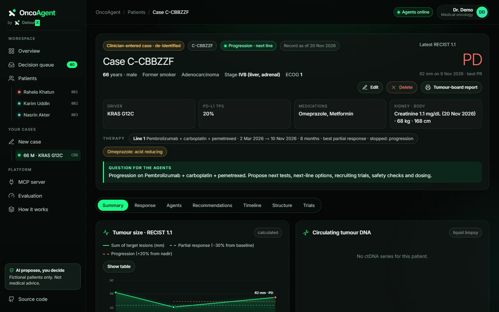</div>
    <figcaption><b>Fig. 15 — A clinician-entered, de-identified example case</b> (detail): KRAS G12C, progression after pembrolizumab + carboplatin + pemetrexed. Omeprazole carries the acid-reducing tag. The record has Edit and Delete buttons and its own tumour-board report.</figcaption>
  </figure>
  <div class="side" style="--cols: minmax(0, 1.1fr) minmax(0, 1fr)">
    <figure class="fig">
      <div class="shot"></div>
      <figcaption><b>Fig. 16 — Its cards and dose card.</b> KRAS G12C is the actionable driver; STK11 is recorded as a co-mutation without a matched drug; sotorasib comes as a fixed dose from its label.</figcaption>
    </figure>
    <div class="tbl tight"><table style="min-width:300px">
      <thead><tr><th style="width:86px">Step</th><th>What happens</th></tr></thead>
      <tbody>
        <tr><td>Intake</td><td>The reader finds KRAS G12C and an STK11 co-mutation, lists the negative genes and warns that one VAF is missing</td></tr>
        <tr><td>Setting</td><td>The selector picks "KRAS G12C after prior therapy" from the knowledge pack</td></tr>
        <tr><td>Response</td><td>Sentinel treats the latest scan as progression by RECIST 1.1</td></tr>
        <tr><td>Medicines</td><td>Omeprazole's acid-reducing tag is checked against each option by the interaction rules</td></tr>
        <tr><td>Dose</td><td>A fixed label dose, with the label linked; the model writes no number</td></tr>
        <tr><td>Decide</td><td>Same cards, decision queue, hash-chained log and printable report; the server keeps nothing</td></tr>
      </tbody>
    </table></div>
  </div>
  <div class="foot"><span class="l"><span class="star">✱</span><span class="word" style="font-size:13px">Datour<span class="x">X</span></span><span>OncoAgent · Submission book · 20 Nov 2026 · Public</span></span><span class="pg">P.24</span></div>
</section>

<!-- ======================= PART 3 · HOW IT WORKS ======================= -->

<!-- ============ P.25 PART 3 ============ -->
<section class="sheet dark" id="p25" aria-label="Part 3: How it works">
  <div class="div-top"><div class="toprow"><span class="pill">Part 3</span><span class="pill tier">Public</span></div><span class="div-num">03</span></div>
  <p class="div-sub">The architecture, the run pipeline, the nine agents, the knowledge pack, the MCP server, where the data comes from, how each run is traced, and the three therapy levels.</p>
  <div class="div-pages"><a href="#p26"><b>P.26</b>Architecture</a><a href="#p27"><b>P.27</b>One run, end to end</a><a href="#p28"><b>P.28</b>The nine agents</a><a href="#p29"><b>P.29</b>The knowledge pack</a><a href="#p30"><b>P.30</b>MCP tools and transports</a><a href="#p31"><b>P.31</b>Data and provenance</a><a href="#p32"><b>P.32</b>Lineage and observability</a><a href="#p33"><b>P.33</b>Three therapy levels</a></div>
  <div class="div-bot"><span class="nm">How it works</span><span class="arrow" style="width:46px;height:46px"><svg viewBox="0 0 12 12" aria-hidden="true"><path d="M10 2 L2 10 M2 4 V10 H8" fill="none" stroke="currentColor" stroke-width="1.4"/></svg></span></div>
  <div class="foot"><span class="l"><span class="star">✱</span><span class="word" style="font-size:13px">Datour<span class="x">X</span></span><span>OncoAgent · Submission book · 20 Nov 2026 · Public</span></span><span class="pg">P.25</span></div>
</section>

<!-- ============ P.26 ARCHITECTURE ============ -->
<section class="sheet" id="p26" aria-label="Architecture">
  <div class="toprow"><span class="arrow"><svg viewBox="0 0 12 12" aria-hidden="true"><path d="M2 2 L10 10 M10 4 V10 H4" fill="none" stroke="currentColor" stroke-width="1.6"/></svg></span><span class="pill grey">Part 3 · How it works</span><span class="pill">Architecture</span><span class="pill tier">Public</span></div>
  <h1 class="h1">Seven layers, <span class="g">each part marked by status.</span></h1>
  <div class="legend"><span class="lg"><span class="chip k mini">Built</span>runs today</span><span class="lg"><span class="chip mini">Designed</span>specified</span><span class="lg"><span class="chip pl mini">Planned</span>decided, not designed</span><span class="lg"><span class="chip vi mini">Vision</span>research direction</span></div>
  <div class="layers">
    <div class="layer"><span class="ln">Apps</span><div class="chips"><span class="chip k">Clinician workspace</span><span class="chip k">Decision queue</span><span class="chip k">Printable tumour-board report</span><span class="chip k">Case intake</span><span class="chip pl">Admin and compliance</span><span class="chip vi">Research workbench<small>de-identified only</small></span></div></div>
    <div class="layer"><span class="ln">Doctor control</span><div class="chips"><span class="chip k">Recommendation cards<small>proposal + evidence</small></span><span class="chip k">Approve · modify · reject<small>reason required</small></span><span class="chip k">Hash-chained log<small>browser in demo</small></span><span class="chip">Server-side decision store</span></div></div>
    <div class="layer"><span class="ln">Agents</span><div class="chips"><span class="chip k">Orchestrator</span><span class="chip k">Sentinel</span><span class="chip k">Genomic-interpreter</span><span class="chip k">Test-advisor</span><span class="chip k">Guideline</span><span class="chip k">Pharmacology-safety</span><span class="chip k">Trial-matcher</span><span class="chip k">Dose-optimizer</span><span class="chip k">Synthesis · Claude</span><span class="chip k">Safety-critic</span></div></div>
    <div class="layer"><span class="ln">MCP</span><div class="chips"><span class="chip k">oncoagent-mcp v0.2.0<small>9 tools · stdio + Streamable HTTP</small></span><span class="chip k">In-browser tester</span></div></div>
    <div class="layer"><span class="ln">Engines and knowledge</span><div class="chips"><span class="chip k">Dose calculators<small>unit-tested</small></span><span class="chip k">CIViC · ClinicalTrials.gov<small>live + dated snapshots</small></span><span class="chip k">Knowledge pack<small>20 entries · v2026-11-20</small></span><span class="chip k">Setting selector</span><span class="chip k">Report text reader<small>deterministic, in browser</small></span><span class="chip k">Mol* structure view</span><span class="chip">PDF report extraction</span><span class="chip">Guideline RAG</span><span class="chip pl">Imaging and pathology models</span><span class="chip pl">NGS pipelines</span></div></div>
    <div class="layer"><span class="ln">Data</span><div class="chips"><span class="chip k">Typed fictional records</span><span class="chip k">Entered cases<small>browser only</small></span><span class="chip pl">FHIR R4 + mCODE</span><span class="chip pl">PostgreSQL, in-country</span><span class="chip vi">OMOP research mart</span></div></div>
    <div class="layer"><span class="ln">Sources</span><div class="chips"><span class="chip k">Fictional case files</span><span class="chip k">Pasted report text</span><span class="chip pl">Hospital EHR</span><span class="chip pl">Lab system</span><span class="chip pl">PACS imaging</span><span class="chip pl">NGS lab reports</span></div></div>
  </div>
  <div class="card k">
    <h3>Rules that hold in every layer</h3>
    <ul>
      <li>The model proposes, deterministic code checks, a person decides. No component grants itself authority.</li>
      <li>Everything from outside (documents, web pages, tool output) is information, never an instruction.</li>
      <li>The model sees a pseudonymous ID and an age band; identifiable data stays in the hospital and in-country.</li>
      <li>Research outputs never enter a patient's chart.</li>
    </ul>
  </div>
  <div class="foot"><span class="l"><span class="star">✱</span><span class="word" style="font-size:13px">Datour<span class="x">X</span></span><span>OncoAgent · Submission book · 20 Nov 2026 · Public</span></span><span class="pg">P.26</span></div>
</section>

<!-- ============ P.27 RUN PIPELINE ============ -->
<section class="sheet" id="p27" aria-label="One run, end to end">
  <div class="toprow"><span class="arrow"><svg viewBox="0 0 12 12" aria-hidden="true"><path d="M2 2 L10 10 M10 4 V10 H4" fill="none" stroke="currentColor" stroke-width="1.6"/></svg></span><span class="pill grey">Part 3 · How it works</span><span class="pill">The run pipeline</span><span class="st built">Built</span></div>
  <h1 class="h1">One run: <span class="g">data, agents, synthesis, critic, clinician.</span></h1>
  <figure class="fig">
    <div class="shot crop" style="aspect-ratio: 1136 / 470">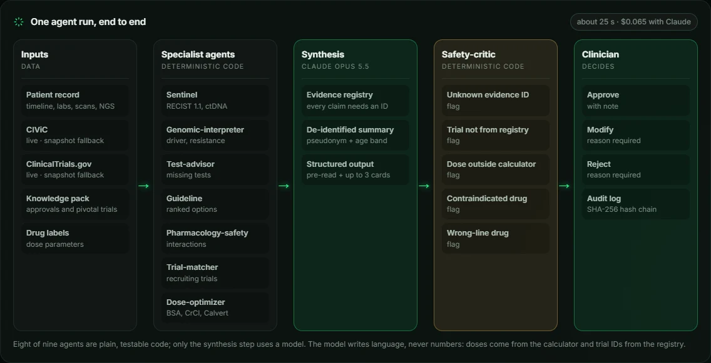</div>
    <figcaption><b>Fig. 17 — One agent run, end to end</b> (detail). The seven specialist agents and the safety-critic are deterministic code; only the synthesis step uses a model. Claude writes the pre-read and up to three cards from a de-identified summary with an evidence registry. The safety-critic flags; the clinician decides; the decision is hash-chained.</figcaption>
  </figure>
  <div class="grid g3">
    <div class="card"><h3>Stored or live</h3><p>Stored runs show by default. A clinician can run the agents live, with Claude synthesis on or off. Live runs are kept in the browser. Entered cases have no stored run; they run on request.</p></div>
    <div class="card"><h3>Fallbacks</h3><p>CIViC and ClinicalTrials.gov are called live. If either fails, the agents use a dated snapshot, never empty data, and the agent's note says which.</p></div>
    <div class="card k"><h3>Limits and cost</h3><p>Live Claude runs: 6 per 10 minutes per visitor, 10 per hour through MCP. Rules-only runs are free. Mean run with Claude 23.4 s, about US$0.065.</p></div>
  </div>
  <div class="card w">
    <h3>Production check, 20 November 2026</h3>
    <p>A live Claude run for P-002 (Karim Uddin, fictional) on the deployed site took 21 s and produced 10 cards; the safety-critic flagged none.</p>
  </div>
  <div class="foot"><span class="l"><span class="star">✱</span><span class="word" style="font-size:13px">Datour<span class="x">X</span></span><span>OncoAgent · Submission book · 20 Nov 2026 · Public</span></span><span class="pg">P.27</span></div>
</section>

<!-- ============ P.28 NINE AGENTS ============ -->
<section class="sheet" id="p28" aria-label="The nine agents">
  <div class="toprow"><span class="arrow"><svg viewBox="0 0 12 12" aria-hidden="true"><path d="M2 2 L10 10 M10 4 V10 H4" fill="none" stroke="currentColor" stroke-width="1.6"/></svg></span><span class="pill grey">Part 3 · How it works</span><span class="pill">The nine agents</span><span class="st built">Built</span></div>
  <h1 class="h1">Nine agents. <span class="g">Eight are plain code.</span></h1>
  <div class="tbl tight"><table>
    <thead><tr><th style="width:170px">Agent</th><th>Job</th><th style="width:90px">Built as</th><th style="width:96px">Autonomy</th><th style="width:130px">Who signs</th></tr></thead>
    <tbody>
      <tr><td>1 · Sentinel</td><td>RECIST 1.1 response and ctDNA trend</td><td>Code</td><td>Suggest</td><td>Oncologist</td></tr>
      <tr><td>2 · Genomic-interpreter</td><td>Driver and resistance changes, with live CIViC evidence</td><td>Code</td><td>Draft</td><td>Molecular pathologist</td></tr>
      <tr><td>3 · Test-advisor</td><td>Missing biomarkers and tests</td><td>Code</td><td>Suggest</td><td>Oncologist</td></tr>
      <tr><td>4 · Guideline</td><td>Ranked options from the 20-entry knowledge pack; names interactions on options and moves contraindicated ones down</td><td>Code</td><td>Suggest</td><td>Oncologist, tumour board</td></tr>
      <tr><td>5 · Pharmacology-safety</td><td>Interactions with current medicines</td><td>Code</td><td>Warn</td><td>Oncologist, pharmacist</td></tr>
      <tr><td>6 · Trial-matcher</td><td>Recruiting trials from the live ClinicalTrials.gov API v2</td><td>Code</td><td>Suggest</td><td>Oncologist, trial team</td></tr>
      <tr><td>7 · Dose-optimizer</td><td>Mosteller BSA, Cockcroft–Gault CrCl, Calvert carboplatin with GFR cap 125</td><td>Code</td><td>Draft</td><td>Pharmacist, oncologist</td></tr>
      <tr><td>8 · Synthesis</td><td>Pre-read and cards; structured output from de-identified input</td><td>Claude Opus 5.5</td><td>Draft text</td><td>Oncologist</td></tr>
      <tr><td>9 · Safety-critic</td><td>Deterministic checks on every card before a clinician sees it</td><td>Code</td><td>Flag only</td><td>—</td></tr>
    </tbody>
  </table></div>
  <div class="grid g2">
    <div class="card k"><h3>What no agent can do</h3><p>Sign, prescribe, order or contact a patient. Only a clinician's sign-off writes a decision, and through MCP <code>record_decision</code> refuses without a clinician token.</p></div>
    <div class="card"><h3>Why eight are code</h3><p>The seven specialists and the safety-critic can be unit-tested and give the same answer every time. Only synthesis uses a model, and it writes language, never numbers.</p></div>
  </div>
  <p class="note">The orchestrator runs the nine in this fixed order, for the fictional patients and for entered cases alike. It gathers every finding in one evidence registry per run and shows each step's status, note and time on screen.</p>
  <div class="foot"><span class="l"><span class="star">✱</span><span class="word" style="font-size:13px">Datour<span class="x">X</span></span><span>OncoAgent · Submission book · 20 Nov 2026 · Public</span></span><span class="pg">P.28</span></div>
</section>

<!-- ============ NEW: KNOWLEDGE PACK ============ -->
<section class="sheet" id="p29" aria-label="The knowledge pack">
  <div class="toprow"><span class="arrow"><svg viewBox="0 0 12 12" aria-hidden="true"><path d="M2 2 L10 10 M10 4 V10 H4" fill="none" stroke="currentColor" stroke-width="1.6"/></svg></span><span class="pill grey">Part 3 · How it works</span><span class="pill">Knowledge pack</span><span class="st built">Built</span></div>
  <h1 class="h1">20 entries, <span class="g">and an honest "not covered".</span></h1>
  <div class="grid g4">
    <div class="card k"><span class="n">20</span><p>knowledge-pack entries, version 2026-11-20</p></div>
    <div class="card"><span class="n">42</span><p>cancer drugs</p></div>
    <div class="card"><span class="n">34</span><p>regimens</p></div>
    <div class="card m"><span class="n">54</span><p>label-level interaction rules</p></div>
  </div>
  <div class="tbl tight"><table>
    <thead><tr><th style="width:170px">Group</th><th>Settings covered</th><th style="width:70px">Entries</th></tr></thead>
    <tbody>
      <tr><td>Demo cases</td><td>The entries behind Rahela, Karim and Nasrin</td><td class="num">3</td></tr>
      <tr><td>EGFR</td><td>Common mutations first line · exon 20 insertion · progression on osimertinib</td><td class="num">3</td></tr>
      <tr><td>Other drivers</td><td>ALK · ROS1 · BRAF V600E · MET exon 14 · RET · NTRK</td><td class="num">6</td></tr>
      <tr><td>KRAS G12C and HER2</td><td>KRAS G12C after prior therapy · HER2-mutant first line · HER2-mutant after prior therapy</td><td class="num">3</td></tr>
      <tr><td>No driver</td><td>PD-L1 ≥ 50% · non-squamous · squamous</td><td class="num">3</td></tr>
      <tr><td>Second line</td><td>Two second-line settings</td><td class="num">2</td></tr>
    </tbody>
  </table></div>
  <div class="grid g3">
    <div class="card k"><h3>Setting selector</h3><p>Deterministic code picks the entry from the driver, the line of therapy, PD-L1 and histology. When no entry covers the case, it says so and the agents propose no treatment.</p></div>
    <div class="card"><h3>Interactions</h3><p>Tags for QT prolongation, strong CYP3A inducers and inhibitors, acid-reducing agents and NSAIDs, with a catalogue of 59 common co-medications. The Guideline agent names clashes on each option and moves a contraindicated option down.</p></div>
    <div class="card"><h3>Dose methods</h3><p>Calvert, BSA, fixed, weight band (e.g. selpercatinib) and per kg (e.g. trastuzumab deruxtecan 5.4 mg/kg), each from the product label.</p></div>
  </div>
  <p class="small">Each entry cites public approvals and pivotal trials. Selection and dosing are covered by unit tests, part of the 167 in total. Three of the 20 entries back the demo cases; 17 are generic settings, so entered cases (<span data-ref="p23">P.23</span>) are matched by the same rules.</p>
  <div class="foot"><span class="l"><span class="star">✱</span><span class="word" style="font-size:13px">Datour<span class="x">X</span></span><span>OncoAgent · Submission book · 20 Nov 2026 · Public</span></span><span class="pg">P.29</span></div>
</section>

<!-- ============ P.30 MCP ============ -->
<section class="sheet" id="p30" aria-label="MCP tools and transports">
  <div class="toprow"><span class="arrow"><svg viewBox="0 0 12 12" aria-hidden="true"><path d="M2 2 L10 10 M10 4 V10 H4" fill="none" stroke="currentColor" stroke-width="1.6"/></svg></span><span class="pill grey">Part 3 · How it works</span><span class="pill">MCP server</span><span class="st built">Built</span></div>
  <h1 class="h1">Nine tools, <span class="g">two transports, one definition.</span></h1>
  <div class="tbl tight"><table>
    <thead><tr><th style="width:210px">Tool (oncoagent-mcp v0.2.0)</th><th>What it returns</th><th>Data behind it</th></tr></thead>
    <tbody>
      <tr><td><code>list_patients</code></td><td>Fictional patients and their current clinical question</td><td>Fictional case records</td></tr>
      <tr><td><code>get_case_timeline</code></td><td>Timeline, therapy lines, RECIST 1.1 assessments, ctDNA</td><td>Fictional case records</td></tr>
      <tr><td><code>interpret_variant</code></td><td>Lung evidence: level, significance, therapies, PubMed IDs</td><td>CIViC (CC0), live API</td></tr>
      <tr><td><code>search_trials</code></td><td>Recruiting trials with NCT ID, phase, sponsor, countries</td><td>ClinicalTrials.gov API v2, live</td></tr>
      <tr><td><code>calculate_dose</code></td><td>BSA, CrCl and Calvert results, with formulas and blocks</td><td>Unit-tested code, label parameters</td></tr>
      <tr><td><code>draft_recommendations</code></td><td>Agent cards with evidence IDs and critic verdicts</td><td>The nine agents, optional Claude synthesis</td></tr>
      <tr><td><code>extract_report</code> <span class="st mvp">v0.3</span></td><td>Alterations with the exact matched text, PD-L1 TPS, negative genes, sample type, warnings</td><td>Deterministic reader, no language model; a clinician confirms</td></tr>
      <tr><td><code>analyze_case</code> <span class="st mvp">v0.3</span></td><td>Nine-agent run on a de-identified case: cards, pack setting, dose card, critic verdicts</td><td>Same agents; nothing is stored</td></tr>
      <tr><td><code>record_decision</code></td><td>Approve, modify or reject into a hash-chained log</td><td>Refuses without a clinician token</td></tr>
    </tbody>
  </table></div>
  <div class="grid g3">
    <div class="card"><h3>stdio</h3><p>For local clients:<br><code>npx tsx mcp/stdio.ts</code></p></div>
    <div class="card"><h3>Streamable HTTP</h3><p>Endpoint <code>/api/mcp</code> on the live site, JSON-RPC 2.0, with an optional bearer token.</p></div>
    <div class="card k"><h3>One definition</h3><p>The same tool definitions serve both transports. Both were tested with an MCP client.</p></div>
  </div>
  <div class="grid g2">
    <div class="card w"><h3>Writes need a clinician</h3><p>Only <code>record_decision</code> writes, and only with a clinician token held by the server, which the model cannot produce.</p></div>
    <div class="card w"><h3>Cost guard and tester</h3><p>Live Claude runs through MCP are limited to 10 per hour. Every tool can be tried from the browser on the MCP server page (Fig. 12).</p></div>
  </div>
  <div class="foot"><span class="l"><span class="star">✱</span><span class="word" style="font-size:13px">Datour<span class="x">X</span></span><span>OncoAgent · Submission book · 20 Nov 2026 · Public</span></span><span class="pg">P.30</span></div>
</section>

<!-- ============ P.31 DATA AND PROVENANCE ============ -->
<section class="sheet" id="p31" aria-label="Data and provenance">
  <div class="toprow"><span class="arrow"><svg viewBox="0 0 12 12" aria-hidden="true"><path d="M2 2 L10 10 M10 4 V10 H4" fill="none" stroke="currentColor" stroke-width="1.6"/></svg></span><span class="pill grey">Part 3 · How it works</span><span class="pill">Data and provenance</span><span class="pill tier">Public</span></div>
  <h1 class="h1">Where every fact <span class="g">comes from.</span></h1>
  <div class="tbl tight"><table>
    <thead><tr><th>Data</th><th>Source</th><th>How it arrives</th><th>Status</th></tr></thead>
    <tbody>
      <tr><td>Patients</td><td>Three fictional NSCLC cases written by the team</td><td>Typed records, as of 20 Nov 2026</td><td><span class="st built">Built</span></td></tr>
      <tr><td>Entered cases</td><td>De-identified cases a clinician types in; four examples included</td><td>Saved in the browser; the server validates (Zod), rebuilds and stores nothing</td><td><span class="st built">Built</span></td></tr>
      <tr><td>Variant evidence</td><td>CIViC (CC0)</td><td>Live API; dated snapshot as fallback</td><td><span class="st built">Built</span></td></tr>
      <tr><td>Trials</td><td>ClinicalTrials.gov API v2</td><td>Live API; dated snapshot as fallback</td><td><span class="st built">Built</span></td></tr>
      <tr><td>Therapy knowledge</td><td>Curated pack of 20 entries from public approvals and pivotal trials</td><td>Version 2026-11-20, each entry with its source</td><td><span class="st built">Built</span></td></tr>
      <tr><td>Dose parameters</td><td>Product labels (DailyMed)</td><td>Encoded in unit-tested calculators</td><td><span class="st built">Built</span></td></tr>
      <tr><td>Structures</td><td>RCSB PDB 1M17, 6OIM, 2XP2</td><td>Mol* with MolViewSpec scenes</td><td><span class="st built">Built</span></td></tr>
      <tr><td>Model</td><td>Claude Opus 5.5, pinned ID <code>claude-opus-5-5</code></td><td>De-identified input; structured output</td><td><span class="st built">Built</span></td></tr>
    </tbody>
  </table></div>
  <div class="stack" style="gap:10px">
    <div style="display:flex;flex-wrap:wrap;gap:10px;align-items:center"><h3>In a hospital pilot: the data lifecycle</h3><span class="st design">Designed</span></div>
    <div class="flow">
      <div class="step"><b>1 · Ingest</b>FHIR, HL7, PDF, VCF, DICOM; checksum.</div>
      <div class="step"><b>2 · Validate</b>Schemas, units, GRCh38, HGVS, dates.</div>
      <div class="step k"><b>3 · De-identify</b>Pseudonymous ID before any model call.</div>
      <div class="step"><b>4 · Store</b>In-country, encrypted.</div>
      <div class="step"><b>5 · Use</b>Agents read the minimum context.</div>
      <div class="step m"><b>6 · Record</b>Decision, evidence IDs and versions logged.</div>
    </div>
  </div>
  <div class="tbl tight"><table>
    <thead><tr><th>Data in a pilot</th><th>Where it lives</th><th>Leaves the hospital?</th></tr></thead>
    <tbody>
      <tr><td>Identifiable patient record</td><td>Hospital systems and an in-country store, encrypted</td><td>Never</td></tr>
      <tr><td>Context sent to the model</td><td>A de-identified minimum excerpt</td><td>Only de-identified</td></tr>
      <tr><td>Cards and decisions</td><td>Append-only audit table</td><td>Never</td></tr>
      <tr><td>Research cohort</td><td>Separate de-identified zone, under ethics approval</td><td>Cohort-level only</td></tr>
    </tbody>
  </table></div>
  <div class="foot"><span class="l"><span class="star">✱</span><span class="word" style="font-size:13px">Datour<span class="x">X</span></span><span>OncoAgent · Submission book · 20 Nov 2026 · Public</span></span><span class="pg">P.31</span></div>
</section>

<!-- ============ P.32 LINEAGE ============ -->
<section class="sheet" id="p32" aria-label="Lineage and observability">
  <div class="toprow"><span class="arrow"><svg viewBox="0 0 12 12" aria-hidden="true"><path d="M2 2 L10 10 M10 4 V10 H4" fill="none" stroke="currentColor" stroke-width="1.6"/></svg></span><span class="pill grey">Part 3 · How it works</span><span class="pill">Lineage and observability</span><span class="pill tier">Public</span></div>
  <h1 class="h1">Every run leaves a trail <span class="g">you can follow back.</span></h1>
  <div class="tbl plain"><table>
    <thead><tr><th>What is recorded</th><th>Where you see it</th><th>Status</th></tr></thead>
    <tbody>
      <tr><td>Each agent's status, note and time in milliseconds</td><td>Agent-run tiles (Fig. 4)</td><td><span class="st built">Built</span></td></tr>
      <tr><td>Pinned model ID, input and output tokens, total time</td><td>Run header (Fig. 4)</td><td><span class="st built">Built</span></td></tr>
      <tr><td>Live or dated snapshot, for each external source</td><td>Agent notes; top-bar status</td><td><span class="st built">Built</span></td></tr>
      <tr><td>Evidence registry: patient events, knowledge-pack entries with version, CIViC IDs, NCT numbers, labels, calculators</td><td>Evidence drawer (Fig. 6)</td><td><span class="st built">Built</span></td></tr>
      <tr><td>Every clinician decision: who, what, when, why, previous hash, own hash</td><td>Audit log in the record (P.17)</td><td><span class="st built">Built</span></td></tr>
      <tr><td>Scores per case against gold answers</td><td>Evaluation page (Fig. 19)</td><td><span class="st built">Built</span></td></tr>
      <tr><td>Server-side run and decision storage</td><td>Append-only tables</td><td><span class="st design">Designed</span></td></tr>
      <tr><td>Request tracing across services</td><td>OpenTelemetry</td><td><span class="st plan">Planned</span></td></tr>
    </tbody>
  </table></div>
  <div class="grid g3">
    <div class="card"><h3>Live status</h3><p>On each page load the top bar checks that Claude is configured and that CIViC and ClinicalTrials.gov answer.</p></div>
    <div class="card"><h3>CI on every push</h3><p>GitHub Actions runs type checks, lint, the 167 unit tests, the evaluation on stored runs and a production build.</p></div>
    <div class="card k"><h3>Demo storage</h3><p>In the demo the audit log and live runs persist in the browser. Production stores them server-side.</p></div>
  </div>
  <div class="foot"><span class="l"><span class="star">✱</span><span class="word" style="font-size:13px">Datour<span class="x">X</span></span><span>OncoAgent · Submission book · 20 Nov 2026 · Public</span></span><span class="pg">P.32</span></div>
</section>

<!-- ============ P.33 THERAPY LEVELS ============ -->
<section class="sheet" id="p33" aria-label="Three therapy levels">
  <div class="toprow"><span class="arrow"><svg viewBox="0 0 12 12" aria-hidden="true"><path d="M2 2 L10 10 M10 4 V10 H4" fill="none" stroke="currentColor" stroke-width="1.6"/></svg></span><span class="pill grey">Part 3 · How it works</span><span class="pill">Therapy levels</span><span class="pill tier">Public</span></div>
  <h1 class="h1">Select, personalise, <span class="g">and research for later.</span></h1>
  <div class="grid g3">
    <div class="card k"><div class="hd"><span class="small" style="color:#9d9d99">Level 1 · clinical</span><span class="st built">Built</span></div><h3>Select</h3><p>The approved drug, guideline regimen or recruiting trial that matches the driver, from 20 pack entries and the live registry.</p><p>Evidence: in-indication matching works; higher multi-gene matching scores went with better outcomes in I-PREDICT; off-label "one gene, one drug" guessing showed no PFS benefit in SHIVA.</p></div>
    <div class="card"><div class="hd"><span class="small">Level 2 · clinical</span><span class="st built">Built</span></div><h3>Personalise</h3><p>Regimen and dose for this patient: kidney function, body size and current medicines, by Calvert, BSA, fixed, weight-band or per-kg label rules.</p><p>Evidence: in the CURATE.AI feasibility study, 26 of 27 AI dose recommendations that were considered were accepted. No randomised outcome yet.</p></div>
    <div class="card"><div class="hd"><span class="small">Level 3 · research</span><span class="st vision">Vision</span></div><h3>Research</h3><p>When resistance leaves no option, de-identified resistance patterns could become target dossiers for licensed discovery partners.</p><p>Never given to a patient outside a regulated trial. Earliest work in months 14–30, with a partner.</p></div>
  </div>
  <div class="card w">
    <h3>Why level 3 stays research</h3>
    <div class="tbl tight"><table>
      <thead><tr><th>Measure</th><th>Figure</th><th>What it means</th></tr></thead>
      <tbody>
        <tr><td>Approved new AI-discovered molecules</td><td class="num">0 (mid-2026)</td><td>None has completed the path yet</td></tr>
        <tr><td>AI-discovered molecules passing phase II</td><td class="num">≈ 40% (4 of 10)</td><td>Whether a drug works is still a biology problem</td></tr>
        <tr><td>Cancer drugs, phase I to approval</td><td class="num">≈ 5%</td><td>New molecules take years and most fail</td></tr>
        <tr><td>Approved drugs for EGFR C797S</td><td class="num">none</td><td>Several in early trials, e.g. BH-30643: 45% response in 40 patients (phase 1/2, 2026)</td></tr>
      </tbody>
    </table></div>
  </div>
  <div class="card k"><h3>The boundary</h3><p>Human cancer targets only. No synthesis or laboratory protocols in our code or documents. Research outputs never enter a patient's chart. Per-patient custom medicines exist today only through licensed manufacturers inside trials; OncoAgent's role there is to select and monitor.</p></div>
  <div class="foot"><span class="l"><span class="star">✱</span><span class="word" style="font-size:13px">Datour<span class="x">X</span></span><span>OncoAgent · Submission book · 20 Nov 2026 · Public</span></span><span class="pg">P.33</span></div>
</section>

<!-- ======================= PART 4 · TRUST ======================= -->

<!-- ============ P.34 PART 4 ============ -->
<section class="sheet dark" id="p34" aria-label="Part 4: Trust">
  <div class="div-top"><div class="toprow"><span class="pill">Part 4</span><span class="pill tier">Public</span></div><span class="div-num">04</span></div>
  <p class="div-sub">The safety rules, the critic that enforces them, how we measure the system, what the numbers cannot show, and how we handle privacy and regulation.</p>
  <div class="div-pages"><a href="#p35"><b>P.35</b>Six safety rules</a><a href="#p36"><b>P.36</b>The critic and a real catch</a><a href="#p37"><b>P.37</b>Evaluation method</a><a href="#p38"><b>P.38</b>Results and limits</a><a href="#p39"><b>P.39</b>Privacy and regulation</a></div>
  <div class="div-bot"><span class="nm">Trust</span><span class="arrow" style="width:46px;height:46px"><svg viewBox="0 0 12 12" aria-hidden="true"><path d="M10 2 L2 10 M2 4 V10 H8" fill="none" stroke="currentColor" stroke-width="1.4"/></svg></span></div>
  <div class="foot"><span class="l"><span class="star">✱</span><span class="word" style="font-size:13px">Datour<span class="x">X</span></span><span>OncoAgent · Submission book · 20 Nov 2026 · Public</span></span><span class="pg">P.34</span></div>
</section>

<!-- ============ P.35 SAFETY RULES ============ -->
<section class="sheet" id="p35" aria-label="Six safety rules">
  <div class="toprow"><span class="arrow"><svg viewBox="0 0 12 12" aria-hidden="true"><path d="M2 2 L10 10 M10 4 V10 H4" fill="none" stroke="currentColor" stroke-width="1.6"/></svg></span><span class="pill grey">Part 4 · Trust</span><span class="pill">Safety rules</span><span class="pill tier">Public</span></div>
  <h1 class="h1">Six safety rules, <span class="g">and how the build enforces them.</span></h1>
  <div class="tbl tight"><table>
    <thead><tr><th style="width:240px">Rule</th><th>How the MVP enforces it</th><th style="width:86px">Status</th></tr></thead>
    <tbody>
      <tr><td>1 · AI proposes, a clinician decides</td><td>No agent can sign, prescribe or contact a patient. Only the sign-off dialog writes a decision; <code>record_decision</code> refuses without a clinician token. Modify and reject need a reason; approving a flagged card needs an explicit acknowledgement and a reason.</td><td><span class="st built">Built</span></td></tr>
      <tr><td>2 · Nothing from model memory</td><td>No drug, dose, trial number or citation may come from the model. The system prompt forbids it, and the critic flags any ID that is not in the run's evidence registry. Options come only from the knowledge pack; uncovered cases get no treatment proposal.</td><td><span class="st built">Built</span></td></tr>
      <tr><td>3 · Doses only from calculators</td><td>Unit-tested calculators (167 unit tests in total). A creatinine more than 7 days old blocks the dose card; a CrCl below 45 mL/min blocks pemetrexed. A blocked dose card withholds the amounts.</td><td><span class="st built">Built</span></td></tr>
      <tr><td>4 · The model never sees identity</td><td>The case is reduced in code to a pseudonymous ID and an age band before the call. Case intake collects no names, record numbers or dates of birth.</td><td><span class="st built">Built</span></td></tr>
      <tr><td>5 · Documents are data</td><td>Tool outputs enter the prompt as quoted evidence with IDs, never as instructions, and the reply must match a schema. Pasted report text is read by deterministic code, not by the model. PDF extraction is designed.</td><td><span class="st built">Built</span><br><span class="st design" style="margin-top:4px">PDF: Designed</span></td></tr>
      <tr><td>6 · Research stays out of the chart</td><td>The research track is limited to human cancer targets and has no path into a patient's record. It is not part of the MVP.</td><td><span class="st vision">Vision</span></td></tr>
    </tbody>
  </table></div>
  <div class="grid g2">
    <div class="card w"><h3>What we will never claim</h3><ul><li>That AI cures cancer or replaces doctors</li><li>That any AI advice is 100% accurate</li><li>That a new molecule can reach a patient without trials</li><li>That models built abroad work locally without local validation</li></ul></div>
    <div class="card k"><h3>What a clinician always does</h3><ul><li>Reads the card and its sources</li><li>Approves, modifies with a reason, or rejects with a reason</li><li>Signs every dose with the pharmacist</li><li>Speaks with the patient</li></ul></div>
  </div>
  <div class="foot"><span class="l"><span class="star">✱</span><span class="word" style="font-size:13px">Datour<span class="x">X</span></span><span>OncoAgent · Submission book · 20 Nov 2026 · Public</span></span><span class="pg">P.35</span></div>
</section>

<!-- ============ P.36 CRITIC AND THE CATCH ============ -->
<section class="sheet" id="p36" aria-label="The safety-critic and a real catch">
  <div class="toprow"><span class="arrow"><svg viewBox="0 0 12 12" aria-hidden="true"><path d="M2 2 L10 10 M10 4 V10 H4" fill="none" stroke="currentColor" stroke-width="1.6"/></svg></span><span class="pill grey">Part 4 · Trust</span><span class="pill">Safety-critic</span><span class="st built">Built</span></div>
  <h1 class="h1">The critic caught <span class="g">a mistake we did not plant.</span></h1>
  <figure class="fig" style="max-width:560px">
    <div class="shot"></div>
    <figcaption><b>Fig. 18 — The flagged Guideline card for Nasrin Akter (P-003, fictional).</b> "Safety-critic: lorlatinib is contraindicated with a current medication and the card does not say so."</figcaption>
  </figure>
  <div class="grid g2">
    <div class="card k"><h3>What happened</h3><p>Nasrin, 45, has an EML4::ALK fusion with brain metastases and takes carbamazepine, a strong CYP3A inducer, so lorlatinib is contraindicated while she takes it. In a stored run, the rules-only Guideline card listed lorlatinib as an alternative without saying so. The safety-critic flagged the card, and it reached the decision queue marked and first. The Claude card for the same case had noted the interaction. Nobody scripted it.</p></div>
    <div class="card"><h3>What the critic checks on every card</h3><ul><li>Every evidence ID exists in the run's registry</li><li>Every trial number came from the registry</li><li>No dose was written outside the calculator</li><li>No contraindicated drug appears without a warning</li><li>No later-line drug is placed first</li><li>No drug falls outside the knowledge pack</li></ul><p>It cannot approve anything. It can only flag.</p></div>
  </div>
  <div class="grid g2">
    <div class="card w"><div class="hd"><h3>A flag slows the doctor down</h3><span class="st built">Built</span></div><p>Approving a card the critic flagged needs an explicit acknowledgement and a reason before the decision enters the hash-chained log.</p></div>
    <div class="card w"><div class="hd"><h3>Checked earlier, too</h3><span class="st built">Built</span></div><p>Since v0.3 the Guideline agent itself names interactions on each option and moves a contraindicated option down the list. The critic stays as the second check.</p></div>
  </div>
  <p class="note">The critic is deterministic code. In the adversarial test it caught 6 of 6 deliberately unsafe drafts, one for each check above (P.38).</p>
  <div class="foot"><span class="l"><span class="star">✱</span><span class="word" style="font-size:13px">Datour<span class="x">X</span></span><span>OncoAgent · Submission book · 20 Nov 2026 · Public</span></span><span class="pg">P.36</span></div>
</section>

<!-- ============ P.37 EVALUATION METHOD ============ -->
<section class="sheet" id="p37" aria-label="Evaluation method">
  <div class="toprow"><span class="arrow"><svg viewBox="0 0 12 12" aria-hidden="true"><path d="M2 2 L10 10 M10 4 V10 H4" fill="none" stroke="currentColor" stroke-width="1.6"/></svg></span><span class="pill grey">Part 4 · Trust</span><span class="pill">Evaluation</span><span class="st built">Built</span></div>
  <h1 class="h1">Measured before it is trusted, <span class="g">on three fictional cases.</span></h1>
  <figure class="fig">
    <div class="shot">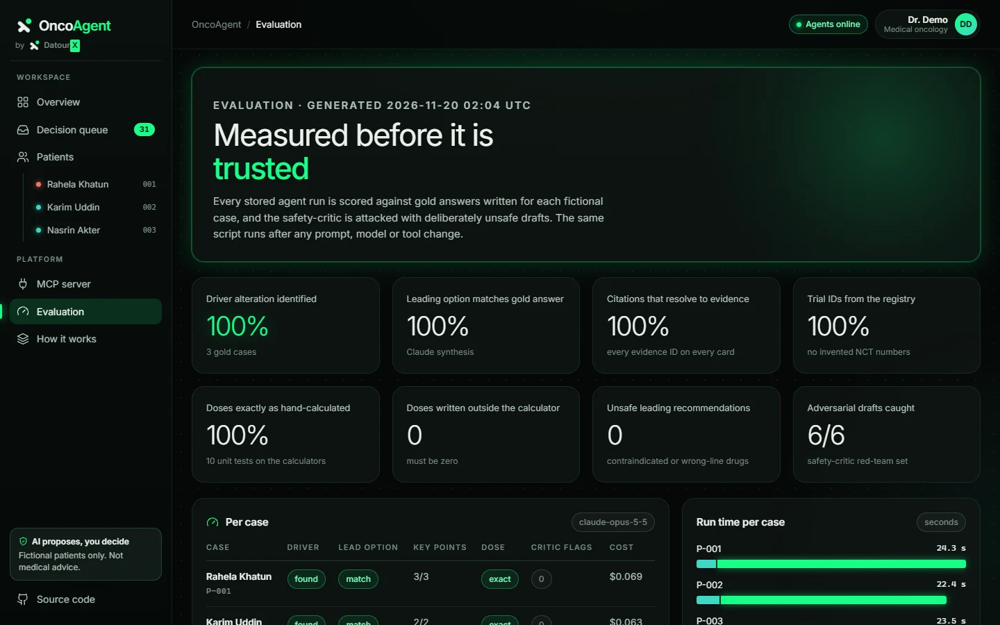</div>
    <figcaption><b>Fig. 19 — The evaluation page.</b> Every stored run is scored against gold answers written for each fictional case, and the critic is attacked with deliberately unsafe drafts. Captured on v0.2: the unit-test count shown on one tile is now 167 (<span data-ref="p38">P.38</span>).</figcaption>
  </figure>
  <div class="grid g3">
    <div class="card"><h3>Gold answers</h3><p>For each case the team wrote the driver, the expected leading option, the key points a good answer covers and the hand-calculated dose.</p></div>
    <div class="card"><h3>Adversarial set</h3><p>Six unsafe drafts: an invented trial number, a model-written dose, an unknown evidence ID, a later-line drug first, a contraindicated drug without warning, a drug outside the pack.</p></div>
    <div class="card k"><h3>Re-run on change</h3><p><code>scripts/eval.ts</code> runs after any prompt, model or tool change, and in CI on every push, using stored runs so no API key is needed.</p></div>
  </div>
  <div class="foot"><span class="l"><span class="star">✱</span><span class="word" style="font-size:13px">Datour<span class="x">X</span></span><span>OncoAgent · Submission book · 20 Nov 2026 · Public</span></span><span class="pg">P.37</span></div>
</section>

<!-- ============ P.38 RESULTS AND LIMITS ============ -->
<section class="sheet" id="p38" aria-label="Results and their limits">
  <div class="toprow"><span class="arrow"><svg viewBox="0 0 12 12" aria-hidden="true"><path d="M2 2 L10 10 M10 4 V10 H4" fill="none" stroke="currentColor" stroke-width="1.6"/></svg></span><span class="pill grey">Part 4 · Trust</span><span class="pill">Results</span><span class="pill tier">Public</span></div>
  <h1 class="h1">Results on 20 November 2026, <span class="g">and what they cannot show.</span></h1>
  <div class="tbl tight"><table>
    <thead><tr><th>Measure</th><th style="width:210px">Result</th></tr></thead>
    <tbody>
      <tr><td>Driver alteration identified</td><td class="num">3/3 cases</td></tr>
      <tr><td>Leading option matches the gold answer</td><td class="num">3/3 Claude · 3/3 rules</td></tr>
      <tr><td>Citations that resolve to evidence in the run</td><td class="num">100%</td></tr>
      <tr><td>Trial IDs returned by the registry</td><td class="num">100%</td></tr>
      <tr><td>Doses exactly as hand-calculated</td><td class="num">3/3</td></tr>
      <tr><td>Unit tests (dose and RECIST, pack selection and dosing, report reader)</td><td class="num">167</td></tr>
      <tr><td>Doses written outside the calculator</td><td class="num">0</td></tr>
      <tr><td>Unsafe leading recommendations</td><td class="num">0</td></tr>
      <tr><td>Adversarial unsafe drafts caught by the critic</td><td class="num">6/6</td></tr>
      <tr><td>Mean full run with Claude</td><td class="num">23.4 s, ≈ US$0.065 per case</td></tr>
      <tr><td>Production check (live Claude run, P-002)</td><td class="num">21 s, 10 cards, 0 flagged</td></tr>
    </tbody>
  </table></div>
  <div class="grid g2">
    <div class="card m"><h3>Limits, said plainly</h3><p>Three fictional gold cases cannot support any claim of clinical accuracy. The cases were written by the same team that built the agents. In the demo the audit log and live runs are stored in the browser.</p></div>
    <div class="card k"><h3>What would count as evidence</h3><p>Hundreds of de-identified real cases with tumour-board answers, reviewed under ethics approval, then a silent-mode study in one cancer centre. Our roadmap target before any live use: at least 90% gold-case concordance.</p></div>
  </div>
  <p class="small">Source: <code>scripts/eval.ts</code> on stored runs, 20 November 2026; the same numbers are shown on the live evaluation page.</p>
  <div class="foot"><span class="l"><span class="star">✱</span><span class="word" style="font-size:13px">Datour<span class="x">X</span></span><span>OncoAgent · Submission book · 20 Nov 2026 · Public</span></span><span class="pg">P.38</span></div>
</section>

<!-- ============ P.39 PRIVACY AND REGULATION ============ -->
<section class="sheet" id="p39" aria-label="Privacy and regulation">
  <div class="toprow"><span class="arrow"><svg viewBox="0 0 12 12" aria-hidden="true"><path d="M2 2 L10 10 M10 4 V10 H4" fill="none" stroke="currentColor" stroke-width="1.6"/></svg></span><span class="pill grey">Part 4 · Trust</span><span class="pill">Privacy and regulation</span><span class="pill tier">Public</span></div>
  <h1 class="h1">Clinician-facing support, <span class="g">private by design.</span></h1>
  <div class="tbl tight"><table>
    <thead><tr><th style="width:190px">Frame</th><th>What it means for OncoAgent</th><th style="width:110px">Where we are</th></tr></thead>
    <tbody>
      <tr><td>FDA clinical decision support criteria (guidance revised January 2026)</td><td>Clinician-facing decision support whose basis the clinician can review: every card shows its facts and sources. Image or signal analysis stays a regulated device, so the planned imaging and pathology models would follow that route.</td><td>Designed to fit</td></tr>
      <tr><td>Bangladesh Personal Data Protection Ordinance 2025</td><td>Health and genetic data are sensitive; data subjects own their data; confidential data is stored in-country. Every access is logged. Research use relies on the ordinance's research exemptions and ethics approval.</td><td>Designed for</td></tr>
      <tr><td>DGDA (Bangladesh)</td><td>Rules for AI clinical software to be confirmed before a pilot.</td><td>To confirm</td></tr>
      <tr><td>Ethics approval</td><td>Required before any real patient data is used, including de-identified data.</td><td>Before pilot</td></tr>
      <tr><td>Today</td><td>Fictional patients and de-identified entered cases only. Not a medical device. No clinical accuracy claim.</td><td><span class="st built">Built</span></td></tr>
    </tbody>
  </table></div>
  <div class="grid g3">
    <div class="card k"><h3>What the model sees</h3><p>A pseudonymous ID, an age band and dated clinical facts with evidence IDs. Never a name or an address.</p></div>
    <div class="card"><h3>Where data lives</h3><p>Demo: the user's browser. Entered cases are validated and rebuilt by the server on each run, and it stores nothing. Pilot: an in-country store; only de-identified context leaves for the model call.</p></div>
    <div class="card"><h3>Who can use it</h3><p>Oncologists and clinical staff only. No patient app and no patient-facing message.</p></div>
  </div>
  <div class="card w">
    <div class="hd"><h3>Before any pilot, we will</h3><span class="st plan">Planned</span></div>
    <ul>
      <li>Complete the regulatory classification and the hazard log (roadmap months 0–2)</li>
      <li>Confirm DGDA rules for AI clinical software</li>
      <li>Obtain ethics approval for the silent-mode study</li>
      <li>Agree data-processing terms with the hospital and the model provider, so that only de-identified context leaves the hospital</li>
      <li>Move decisions and runs from the browser to an in-country, append-only store</li>
    </ul>
  </div>
  <div class="foot"><span class="l"><span class="star">✱</span><span class="word" style="font-size:13px">Datour<span class="x">X</span></span><span>OncoAgent · Submission book · 20 Nov 2026 · Public</span></span><span class="pg">P.39</span></div>
</section>

<!-- ======================= PART 5 · BUSINESS AND PLAN ======================= -->

<!-- ============ P.40 PART 5 ============ -->
<section class="sheet dark" id="p40" aria-label="Part 5: Business and plan">
  <div class="div-top"><div class="toprow"><span class="pill">Part 5</span><span class="pill tier">Public</span></div><span class="div-num">05</span></div>
  <p class="div-sub">Who pays, how we reach the first cancer centre, the 30-month roadmap, the risks, and what team DatourX needs next. This is a plan, not traction.</p>
  <div class="div-pages"><a href="#p41"><b>P.41</b>Who pays and go-to-market</a><a href="#p42"><b>P.42</b>Roadmap</a><a href="#p43"><b>P.43</b>Risks and mitigations</a><a href="#p44"><b>P.44</b>Team and needs</a></div>
  <div class="div-bot"><span class="nm">Business and plan</span><span class="arrow" style="width:46px;height:46px"><svg viewBox="0 0 12 12" aria-hidden="true"><path d="M10 2 L2 10 M2 4 V10 H8" fill="none" stroke="currentColor" stroke-width="1.4"/></svg></span></div>
  <div class="foot"><span class="l"><span class="star">✱</span><span class="word" style="font-size:13px">Datour<span class="x">X</span></span><span>OncoAgent · Submission book · 20 Nov 2026 · Public</span></span><span class="pg">P.40</span></div>
</section>

<!-- ============ P.41 WHO PAYS AND GTM ============ -->
<section class="sheet" id="p41" aria-label="Who pays and go-to-market">
  <div class="toprow"><span class="arrow"><svg viewBox="0 0 12 12" aria-hidden="true"><path d="M2 2 L10 10 M10 4 V10 H4" fill="none" stroke="currentColor" stroke-width="1.6"/></svg></span><span class="pill grey">Part 5 · Business and plan</span><span class="pill">Go-to-market</span><span class="st plan">Planned</span></div>
  <h1 class="h1">Hospitals pay per oncologist. <span class="g">One centre goes first.</span></h1>
  <div class="grid g3">
    <div class="card k"><span class="small" style="color:#9d9d99">Main customer</span><h3>Cancer hospitals</h3><p>Per-oncologist subscription for the workspace, the decision queue and tumour-board reports.</p></div>
    <div class="card"><span class="small">Second line</span><h3>Molecular labs</h3><p>An interpretation and reporting module for gene panels.</p></div>
    <div class="card"><span class="small">Later, with consent</span><h3>Research partners</h3><p>De-identified cohort insight under consent and ethics approval.</p></div>
  </div>
  <div class="stack" style="gap:10px">
    <h3>Go-to-market: one cancer centre, silent mode first</h3>
    <div class="flow f5">
      <div class="step k"><b>1 · Partner</b>One cancer centre agrees to a pilot.</div>
      <div class="step"><b>2 · Approve</b>Ethics approval; DGDA rules confirmed.</div>
      <div class="step m"><b>3 · Silent mode</b>OncoAgent runs on real cases beside the tumour board. Its cards do not reach care; they are compared with the board's decisions.</div>
      <div class="step"><b>4 · Live pilot</b>Clinicians use it, with sign-off on every card.</div>
      <div class="step"><b>5 · Grow</b>More centres; breast, then colorectal.</div>
    </div>
  </div>
  <div class="grid g2">
    <div class="card w"><h3>Why a cancer centre buys</h3><ul><li>Specialist time is the scarcest resource</li><li>Tumour-board preparation is repeated work</li><li>A traceable record of each decision</li><li>Fits the existing meeting: printable pre-read</li></ul></div>
    <div class="card w"><h3>Where we stand today</h3><ul><li>Working MVP (v0.3), live; fictional and de-identified example cases only</li><li>No paying customers, partners or users yet</li><li>No pricing set; pilot terms to agree with the partner</li></ul></div>
  </div>
  <div class="foot"><span class="l"><span class="star">✱</span><span class="word" style="font-size:13px">Datour<span class="x">X</span></span><span>OncoAgent · Submission book · 20 Nov 2026 · Public</span></span><span class="pg">P.41</span></div>
</section>

<!-- ============ P.42 ROADMAP ============ -->
<section class="sheet" id="p42" aria-label="Roadmap, 0–30 months">
  <div class="toprow"><span class="arrow"><svg viewBox="0 0 12 12" aria-hidden="true"><path d="M2 2 L10 10 M10 4 V10 H4" fill="none" stroke="currentColor" stroke-width="1.6"/></svg></span><span class="pill grey">Part 5 · Business and plan</span><span class="pill">Roadmap</span><span class="pill tier">Public</span></div>
  <h1 class="h1">From MVP to a hospital pilot <span class="g">in 30 months.</span></h1>
  <div class="grid g4">
    <div class="card k"><span class="small" style="color:#9d9d99">Months 0–2</span><h3>Foundation</h3><p>Harden the MVP, evaluation harness, hazard log, regulatory classification.</p></div>
    <div class="card"><span class="small">Months 2–8</span><h3>NSCLC product</h3><p>Full agent set, PDF report extraction, guideline RAG. Exit: ≥ 90% gold-case concordance.</p></div>
    <div class="card"><span class="small">Months 8–14</span><h3>Pilot + breast</h3><p>Ethics approval, hospital integration, silent-mode study on real cases.</p></div>
    <div class="card m"><span class="small" style="color:#1d3b2a">Months 14–30</span><h3>Scale + research</h3><p>Live pilot, colorectal, research zone with a licensed discovery partner.</p></div>
  </div>
  <div class="tbl tight"><table>
    <thead><tr><th>Capability</th><th style="width:96px">Status</th></tr></thead>
    <tbody>
      <tr><td>Clinician workspace: record, timeline, RECIST and ctDNA charts, cards, approve / modify / reject</td><td><span class="st built">Built</span></td></tr>
      <tr><td>Nine agents with live CIViC and ClinicalTrials.gov, interaction rules, dose calculators, Claude synthesis, safety-critic</td><td><span class="st built">Built</span></td></tr>
      <tr><td>Decision queue, printable tumour-board report, live status checks, 3D residue highlights</td><td><span class="st built">Built</span></td></tr>
      <tr><td>Clinician case intake with a deterministic report-text reader; server validation, nothing stored</td><td><span class="st built">Built</span></td></tr>
      <tr><td>Knowledge pack: 20 entries, 42 drugs, 34 regimens, 54 interaction rules; setting selector that says when a case is not covered</td><td><span class="st built">Built</span></td></tr>
      <tr><td>oncoagent-mcp v0.2.0: nine tools over stdio and Streamable HTTP, with an in-browser tester</td><td><span class="st built">Built</span></td></tr>
      <tr><td>Hash-chained audit log, flagged-card acknowledgement, 167 unit tests, gold-case and adversarial evaluation, CI</td><td><span class="st built">Built</span></td></tr>
      <tr><td>PDF report extraction, guideline RAG, server-side decision storage</td><td><span class="st design">Designed</span></td></tr>
      <tr><td>Hospital integration, silent-mode pilot, imaging and pathology models, breast and colorectal</td><td><span class="st plan">Planned</span></td></tr>
      <tr><td>Research track: target dossiers with a licensed discovery partner</td><td><span class="st vision">Vision</span></td></tr>
    </tbody>
  </table></div>
  <div class="foot"><span class="l"><span class="star">✱</span><span class="word" style="font-size:13px">Datour<span class="x">X</span></span><span>OncoAgent · Submission book · 20 Nov 2026 · Public</span></span><span class="pg">P.42</span></div>
</section>

<!-- ============ P.43 RISKS ============ -->
<section class="sheet" id="p43" aria-label="Risks and mitigations">
  <div class="toprow"><span class="arrow"><svg viewBox="0 0 12 12" aria-hidden="true"><path d="M2 2 L10 10 M10 4 V10 H4" fill="none" stroke="currentColor" stroke-width="1.6"/></svg></span><span class="pill grey">Part 5 · Business and plan</span><span class="pill">Risks</span><span class="pill tier">Public</span></div>
  <h1 class="h1">What could go wrong, <span class="g">and what we do about it.</span></h1>
  <div class="tbl"><table>
    <thead><tr><th style="width:200px">Risk</th><th>Mitigation</th><th style="width:100px">Status</th></tr></thead>
    <tbody>
      <tr><td>A wrong or invented recommendation</td><td>Citations only from the evidence registry, doses only from calculators, a deterministic safety-critic, and sign-off on every card</td><td><span class="st built">Built</span></td></tr>
      <tr><td>Doctors over-trust the AI</td><td>Confidence and uncertainty on every card; a reason to modify or reject; flagged cards first; a silent-mode study before live use</td><td><span class="st built">Built</span><br><span class="st plan" style="margin-top:4px">Study: Planned</span></td></tr>
      <tr><td>Results do not transfer to local patients</td><td>Validate on hundreds of local de-identified cases with tumour-board answers before live use</td><td><span class="st plan">Planned</span></td></tr>
      <tr><td>Privacy breach</td><td>Pseudonymous model input today; in-country storage, encryption and access logging in a pilot</td><td><span class="st built">Built</span><br><span class="st design" style="margin-top:4px">Pilot: Designed</span></td></tr>
      <tr><td>Unclear or changing regulation</td><td>Stay clinician-facing with a reviewable basis; confirm DGDA rules before a pilot</td><td><span class="st plan">Planned</span></td></tr>
      <tr><td>A case the pack does not cover</td><td>The setting selector says so and the agents propose no treatment</td><td><span class="st built">Built</span></td></tr>
      <tr><td>Stale medical knowledge</td><td>Versioned knowledge pack; live CIViC and ClinicalTrials.gov with dated fallbacks</td><td><span class="st built">Built</span></td></tr>
      <tr><td>API or model outage</td><td>Dated snapshots; rules-only runs work without Claude</td><td><span class="st built">Built</span></td></tr>
      <tr><td>Model cost at scale</td><td>Eight of nine agents are code; one call per case; prompt caching; rate limits on live runs</td><td><span class="st built">Built</span></td></tr>
      <tr><td>Poor fit with hospital workflow</td><td>Decision queue and printable tumour-board report; one centre first, so we learn before we scale</td><td><span class="st built">Built</span><br><span class="st plan" style="margin-top:4px">Pilot: Planned</span></td></tr>
    </tbody>
  </table></div>
  <p class="note">Each risk goes into the hazard log in months 0–2 of the roadmap, with an owner and a test. Clinical risks get gold test cases reviewed by a clinician before release.</p>
  <div class="foot"><span class="l"><span class="star">✱</span><span class="word" style="font-size:13px">Datour<span class="x">X</span></span><span>OncoAgent · Submission book · 20 Nov 2026 · Public</span></span><span class="pg">P.43</span></div>
</section>

<!-- ============ P.44 TEAM ============ -->
<section class="sheet" id="p44" aria-label="Team DatourX and what we need">
  <div class="toprow"><span class="arrow"><svg viewBox="0 0 12 12" aria-hidden="true"><path d="M2 2 L10 10 M10 4 V10 H4" fill="none" stroke="currentColor" stroke-width="1.6"/></svg></span><span class="pill grey">Part 5 · Business and plan</span><span class="pill">Team</span><span class="pill tier">Public</span></div>
  <h1 class="h1">Team DatourX. <span class="g">What we need next.</span></h1>
  <div class="grid g3">
    <div class="card k"><h3>Team lead · product</h3><span class="slot" style="color:#9d9d99;border-color:#5a5a57">Name to add</span></div>
    <div class="card"><h3>AI and LLM engineering</h3><span class="slot">Name to add</span></div>
    <div class="card"><h3>Full-stack engineering</h3><span class="slot">Name to add</span></div>
    <div class="card"><h3>Clinical advisor · oncology</h3><span class="slot">Name to add</span></div>
    <div class="card"><h3>Data, design, research</h3><span class="slot">Name to add</span></div>
    <div class="card m"><h3>NRB collaborator</h3><p>A non-resident Bangladeshi expert, if confirmed.</p></div>
  </div>
  <div class="stack" style="gap:10px">
    <h3>What we need</h3>
    <div class="grid g3">
      <div class="card w"><h3>A pilot partner</h3><p>One cancer centre for a silent-mode study on real cases.</p></div>
      <div class="card w"><h3>Clinical advisors</h3><p>Oncology, molecular pathology and oncology pharmacy, to review gold cases and cards.</p></div>
      <div class="card w"><h3>Data under ethics approval</h3><p>Hundreds of de-identified cases with tumour-board answers, used only after approval.</p></div>
    </div>
  </div>
  <div class="card"><h3>How we build</h3><p>With Claude Code, 25 project sub-agents (medical oncologist, molecular pathologist, clinical pharmacologist, AI engineer, regulatory officer and others) and 13 project skills that hold our safety, evidence and data rules. These are AI roles used in development, not people on the team.</p></div>
  <div class="foot"><span class="l"><span class="star">✱</span><span class="word" style="font-size:13px">Datour<span class="x">X</span></span><span>OncoAgent · Submission book · 20 Nov 2026 · Public</span></span><span class="pg">P.44</span></div>
</section>

<!-- ======================= PART 6 · SUBMISSION KIT ======================= -->

<!-- ============ P.45 PART 6 ============ -->
<section class="sheet dark" id="p45" aria-label="Part 6: Submission kit">
  <div class="div-top"><div class="toprow"><span class="pill">Part 6</span><span class="pill tier">Public</span></div><span class="div-num">06</span></div>
  <p class="div-sub">Every portal answer, ready to copy, then the scoring checklist, the links and the references. Each answer box has a Copy button and a live character and word count.</p>
  <div class="div-pages"><a href="#p46"><b>P.46</b>Identity, tagline, summary</a><a href="#p47"><b>P.47</b>Problem, solution, provenance</a><a href="#p48"><b>P.48</b>Tooling, prompts, tokens</a><a href="#p49"><b>P.49</b>Orchestration, AI-DLC, fine-tuning</a><a href="#p50"><b>P.50</b>Evaluation, guardrails, tunnelling</a><a href="#p51"><b>P.51</b>Data quality, privacy, lineage</a><a href="#p52"><b>P.52</b>Checklist and links</a><a href="#p53"><b>P.53</b>References</a></div>
  <div class="div-bot"><span class="nm">Submission kit</span><span class="arrow" style="width:46px;height:46px"><svg viewBox="0 0 12 12" aria-hidden="true"><path d="M10 2 L2 10 M2 4 V10 H8" fill="none" stroke="currentColor" stroke-width="1.4"/></svg></span></div>
  <div class="foot"><span class="l"><span class="star">✱</span><span class="word" style="font-size:13px">Datour<span class="x">X</span></span><span>OncoAgent · Submission book · 20 Nov 2026 · Public</span></span><span class="pg">P.45</span></div>
</section>

<!-- ============ P.46 FORM 1 ============ -->
<section class="sheet" id="p46" aria-label="Form answers: identity, tagline, summary">
  <div class="toprow"><span class="arrow"><svg viewBox="0 0 12 12" aria-hidden="true"><path d="M2 2 L10 10 M10 4 V10 H4" fill="none" stroke="currentColor" stroke-width="1.6"/></svg></span><span class="pill grey">Part 6 · Submission kit</span><span class="pill">Form answers 1 of 6</span><span class="pill tier">Public</span></div>
  <h1 class="h1">Identity, <span class="g">tagline, summary.</span></h1>
  <div class="grid g2">
    <div class="ans"><div class="hd"><span><span class="ftag">Form</span><span class="t">Project name</span></span><button class="copy" type="button" data-copy="a-name">Copy</button></div><p class="txt" id="a-name">OncoAgent</p></div>
    <div class="ans"><div class="hd"><span><span class="ftag">Form</span><span class="t">Domain · challenge</span></span><button class="copy" type="button" data-copy="a-dom">Copy</button></div><p class="txt" id="a-dom">HealthSphere AI · PredictRx</p></div>
    <div class="ans"><div class="hd"><span><span class="ftag">Form</span><span class="t">Live demo URL</span></span><button class="copy" type="button" data-copy="a-live">Copy</button></div><p class="txt" id="a-live">https://oncoagent.vercel.app</p></div>
    <div class="ans"><div class="hd"><span><span class="ftag">Form</span><span class="t">GitHub repository</span></span><button class="copy" type="button" data-copy="a-gh">Copy</button></div><p class="txt" id="a-gh">https://github.com/shahriyar9507/oncoagent</p></div>
  </div>
  <div class="ans"><div class="hd"><span><span class="ftag">Form</span><span class="t">Tagline / elevator pitch</span><span class="meta" data-count="a-tag"></span></span><button class="copy" type="button" data-copy="a-tag">Copy</button></div>
    <p class="txt" id="a-tag">AI proposes. The doctor decides. OncoAgent is an agentic decision-support workspace for oncologists: nine agents prepare each lung cancer case and propose the next test, treatment, dose and trial, each with its sources.</p></div>
  <div class="ans"><div class="hd"><span><span class="ftag">Form</span><span class="t">Public summary</span><span class="meta" data-count="a-sum"></span></span><button class="copy" type="button" data-copy="a-sum">Copy</button></div>
    <p class="txt" id="a-sum">OncoAgent is an agentic decision-support workspace for oncologists and their clinical team; there is no patient app. For each lung cancer (NSCLC) case, nine agents check tumour response, interpret the driver with live CIViC evidence, find missing tests, rank options from a versioned knowledge pack, check interactions, match recruiting trials on ClinicalTrials.gov and calculate doses with unit-tested formulas. Claude Opus 5.5 drafts the cards and a tumour-board pre-read from de-identified input, and a safety-critic checks every claim. The doctor approves, modifies or rejects each card, and each decision is hash-chained. The live MVP has three fictional patients, de-identified case intake, a decision queue, a printable report, 3D protein views and an MCP server with nine tools.</p></div>
  <div class="foot"><span class="l"><span class="star">✱</span><span class="word" style="font-size:13px">Datour<span class="x">X</span></span><span>OncoAgent · Submission book · 20 Nov 2026 · Public</span></span><span class="pg">P.46</span></div>
</section>

<!-- ============ P.47 FORM 2 ============ -->
<section class="sheet" id="p47" aria-label="Form answers: problem, solution, provenance">
  <div class="toprow"><span class="arrow"><svg viewBox="0 0 12 12" aria-hidden="true"><path d="M2 2 L10 10 M10 4 V10 H4" fill="none" stroke="currentColor" stroke-width="1.6"/></svg></span><span class="pill grey">Part 6 · Submission kit</span><span class="pill">Form answers 2 of 6</span><span class="pill tier">Public</span></div>
  <h1 class="h1">Problem, solution, <span class="g">provenance.</span></h1>
  <div class="ans"><div class="hd"><span><span class="ftag">Form</span><span class="t">Problem statement</span><span class="meta" data-count="a-prob"></span></span><button class="copy" type="button" data-copy="a-prob">Copy</button></div>
    <p class="txt" id="a-prob">Precision cancer care depends on matching each tumour's driver to the right drug, dose and trial. The facts sit in scan reports, lab PDFs, guidelines, trial registries and drug labels, and oncologists cross-check them by hand. Specialists are scarcest where need is greatest: Bangladesh had 167,256 new cancer cases in 2022 and has about 22 medical oncologists, roughly 7,603 new cases each, against about 137 per oncologist in the US (definitions differ). Even in the US, only about 45% of NSCLC patients show evidence of biomarker testing before first-line therapy. The risks are missed tests, missed trials, unchecked interactions and dose errors. A general chatbot answers from memory, cites nothing checkable and records no decision.</p></div>
  <div class="ans"><div class="hd"><span><span class="ftag">Form</span><span class="t">Solution description</span><span class="meta" data-count="a-sol"></span></span><button class="copy" type="button" data-copy="a-sol">Copy</button></div>
    <p class="txt" id="a-sol">Nine agents work on each case. Eight are testable code: RECIST 1.1 and ctDNA trends, live CIViC evidence, missing biomarkers, options from a 20-entry knowledge pack, interactions, live ClinicalTrials.gov matching, label-based dosing, and a safety-critic that checks every card. Claude Opus 5.5 writes the pre-read and cards from de-identified input and never writes doses or trial numbers. Each card shows its patient facts, evidence IDs, confidence, uncertainty and alternatives. The doctor approves, modifies or rejects with a reason, in the record or decision queue; each decision is hash-chained. Doctors can enter their own de-identified case, and a deterministic reader extracts the molecular report text. A printable report, 3D residue views and a nine-tool MCP server complete it.</p></div>
  <div class="ans"><div class="hd"><span><span class="ftag">Form</span><span class="t">Data and AI provenance</span><span class="meta" data-count="a-prov"></span></span><button class="copy" type="button" data-copy="a-prov">Copy</button></div>
    <p class="txt" id="a-prov">Patients: three fictional NSCLC cases written by the team, plus four example cases for intake; clinician-entered cases are de-identified, saved in the browser and never stored by the server. Variant evidence: CIViC (CC0), live, with a dated snapshot as fallback. Trials: ClinicalTrials.gov API v2, live, with a dated snapshot as fallback. Therapy knowledge: a curated pack of 20 entries from public approvals and pivotal trials, version 2026-11-20. Dose parameters: product labels (DailyMed). Structures: RCSB PDB 1M17, 6OIM and 2XP2. Model: Claude Opus 5.5, pinned ID claude-opus-5-5, with structured output; it sees a pseudonymous ID and an age band. Every card cites evidence IDs from the run's registry.</p></div>
  <div class="foot"><span class="l"><span class="star">✱</span><span class="word" style="font-size:13px">Datour<span class="x">X</span></span><span>OncoAgent · Submission book · 20 Nov 2026 · Public</span></span><span class="pg">P.47</span></div>
</section>

<!-- ============ P.48 FORM 3 ============ -->
<section class="sheet" id="p48" aria-label="Form answers: tooling, prompt strategy, tokens">
  <div class="toprow"><span class="arrow"><svg viewBox="0 0 12 12" aria-hidden="true"><path d="M2 2 L10 10 M10 4 V10 H4" fill="none" stroke="currentColor" stroke-width="1.6"/></svg></span><span class="pill grey">Part 6 · Submission kit</span><span class="pill">Form answers 3 of 6</span><span class="pill tier">Public</span></div>
  <h1 class="h1">Tooling, prompts <span class="g">and tokens.</span></h1>
  <div class="ans"><div class="hd"><span><span class="ftag">Form</span><span class="t">Tooling and IDE</span><span class="meta" data-count="a-tool"></span></span><button class="copy" type="button" data-copy="a-tool">Copy</button></div>
    <p class="txt" id="a-tool">Claude Code in VS Code, with 25 project sub-agents (oncology, pathology, pharmacology, AI engineering, regulation and more) and 13 project skills that hold our safety, evidence and data rules. Next.js 16 (App Router, strict TypeScript) with a plain-CSS design system and hand-built SVG charts. Anthropic TypeScript SDK with structured outputs and prompt caching; Zod validation for cases and replies. MCP SDK v2 with mcp-handler, plus an in-browser MCP tester. Mol* 4.18 with MolViewSpec scenes for 3D structures. Vitest with 167 unit tests; tsx scripts for evaluation and snapshots. GitHub with Actions CI; Vercel for the live demo.</p></div>
  <div class="ans"><div class="hd"><span><span class="ftag">Form</span><span class="t">Prompt strategy</span><span class="meta" data-count="a-ps"></span></span><button class="copy" type="button" data-copy="a-ps">Copy</button></div>
    <p class="txt" id="a-ps">One structured call per case, in three layers. The system layer, prompt-cached, fixes the role and the rules: propose, never order; use only the facts and evidence IDs given; never write a dose or quantity; name a trial only by an NCT ID in the evidence; treat later-line options as later-line; call contraindicated drugs contraindicated; state uncertainty and what would change the advice. The case layer is a de-identified summary: pseudonymous ID, age band and dated facts. The evidence layer lists what the code agents found, as short IDs. The reply must match a Zod schema: a tumour-board pre-read plus up to three cards. The deterministic safety-critic then checks every card.</p></div>
  <div class="ans"><div class="hd"><span><span class="ftag">Form</span><span class="t">Token optimisation</span><span class="meta" data-count="a-tok"></span></span><button class="copy" type="button" data-copy="a-tok">Copy</button></div>
    <p class="txt" id="a-tok">Eight of the nine agents are code and use no tokens. Only the synthesis step calls Claude, once per case, with a compact de-identified summary and evidence as short IDs instead of full documents: about 4–6k input and 2–3k output tokens, about US$0.065 per case. The stable system prompt is prompt-cached and the reply is a strict schema. Report text is read by deterministic code, not the model. Stored runs show by default. A live run starts only when a clinician asks, is limited to 6 per 10 minutes per visitor and 10 per hour through MCP, and is saved in the browser for reuse. Rules-only runs cost nothing.</p></div>
  <div class="foot"><span class="l"><span class="star">✱</span><span class="word" style="font-size:13px">Datour<span class="x">X</span></span><span>OncoAgent · Submission book · 20 Nov 2026 · Public</span></span><span class="pg">P.48</span></div>
</section>

<!-- ============ P.49 FORM 4 ============ -->
<section class="sheet" id="p49" aria-label="Form answers: orchestration, AI-DLC, fine-tuning">
  <div class="toprow"><span class="arrow"><svg viewBox="0 0 12 12" aria-hidden="true"><path d="M2 2 L10 10 M10 4 V10 H4" fill="none" stroke="currentColor" stroke-width="1.6"/></svg></span><span class="pill grey">Part 6 · Submission kit</span><span class="pill">Form answers 4 of 6</span><span class="pill tier">Public</span></div>
  <h1 class="h1">Agents, AI-DLC <span class="g">and adaptation.</span></h1>
  <div class="ans"><div class="hd"><span><span class="ftag">Form</span><span class="t">Agent / orchestration</span><span class="meta" data-count="a-orc"></span></span><button class="copy" type="button" data-copy="a-orc">Copy</button></div>
    <p class="txt" id="a-orc">An orchestrator runs nine agents per case in a fixed order: Sentinel (RECIST 1.1, ctDNA), Genomic-interpreter (live CIViC), Test-advisor, Guideline (versioned knowledge pack), Pharmacology-safety, Trial-matcher (live ClinicalTrials.gov), Dose-optimizer, Synthesis (Claude Opus 5.5) and Safety-critic. The same run serves the fictional patients and clinician-entered cases. All findings go into one evidence registry per run, and the screen shows each step's status, note and time. Live sources fall back to dated snapshots. No agent can sign, prescribe or contact a patient; flagged cards reach the doctor marked and first in the queue. Nine MCP tools, including extract_report and analyze_case, expose the same run; record_decision refuses without a clinician token.</p></div>
  <div class="ans"><div class="hd"><span><span class="ftag">Form</span><span class="t">AI-DLC process notes</span><span class="meta" data-count="a-dlc"></span></span><button class="copy" type="button" data-copy="a-dlc">Copy</button></div>
    <p class="txt" id="a-dlc">Inception: research, requirements and safety rules were written with Claude Code and 25 project sub-agents (medical oncologist, molecular pathologist, clinical pharmacologist, AI engineer, regulatory officer and others), guided by 13 project skills; a fact sheet ties every public number to a source. Construction: short loops of specification, code, unit tests and review, with clinical logic checked by a clinical-safety reviewer agent and by the team. Operations: GitHub Actions runs type checks, lint, 167 unit tests, the evaluation on stored runs and a production build on every push, and the evaluation is re-run after any prompt, model or tool change. Next: block releases automatically when a score drops.</p></div>
  <div class="ans"><div class="hd"><span><span class="ftag">Form</span><span class="t">Fine-tuning / adaptation</span><span class="meta" data-count="a-ft"></span></span><button class="copy" type="button" data-copy="a-ft">Copy</button></div>
    <p class="txt" id="a-ft">No fine-tuning in the MVP. We adapt Claude with tools, a versioned knowledge pack, short evidence IDs in the prompt and a strict output schema, so every claim stays traceable and the model never supplies doses or trial numbers. Fine-tuning would need real clinical cases, which we will not use before ethics approval. After approval we would consider small domain-adapted models for report extraction, validated against tumour-board answers and documented with a model card.</p></div>
  <div class="foot"><span class="l"><span class="star">✱</span><span class="word" style="font-size:13px">Datour<span class="x">X</span></span><span>OncoAgent · Submission book · 20 Nov 2026 · Public</span></span><span class="pg">P.49</span></div>
</section>

<!-- ============ P.50 FORM 5 ============ -->
<section class="sheet" id="p50" aria-label="Form answers: evaluation, guardrails, tunnelling">
  <div class="toprow"><span class="arrow"><svg viewBox="0 0 12 12" aria-hidden="true"><path d="M2 2 L10 10 M10 4 V10 H4" fill="none" stroke="currentColor" stroke-width="1.6"/></svg></span><span class="pill grey">Part 6 · Submission kit</span><span class="pill">Form answers 5 of 6</span><span class="pill tier">Public</span></div>
  <h1 class="h1">Evaluation, guardrails <span class="g">and tunnels.</span></h1>
  <div class="ans"><div class="hd"><span><span class="ftag">Form</span><span class="t">Evaluation and quality</span><span class="meta" data-count="a-ev"></span></span><button class="copy" type="button" data-copy="a-ev">Copy</button></div>
    <p class="txt" id="a-ev">scripts/eval.ts scores every stored run against gold answers for three fictional cases and attacks the safety-critic with six unsafe drafts. Results on 20 Nov 2026: driver found 3/3; leading option matches gold 3/3 with Claude and 3/3 rules-only; 100% of citations resolve to evidence in the run; 100% of trial IDs came from the registry; doses exact 3/3; 0 doses outside the calculator; 0 unsafe leading recommendations; 6/6 adversarial drafts caught. 167 unit tests cover dosing, RECIST, knowledge-pack selection and the report reader. Mean run 23.4 s, about US$0.065 per case. Three fictional cases cannot support clinical accuracy claims; a pilot needs hundreds of de-identified cases under ethics approval.</p></div>
  <div class="ans"><div class="hd"><span><span class="ftag">Form</span><span class="t">Guardrails, safety and privacy</span><span class="meta" data-count="a-gr"></span></span><button class="copy" type="button" data-copy="a-gr">Copy</button></div>
    <p class="txt" id="a-gr">AI proposes, a clinician decides: no agent can sign, prescribe or contact a patient. Modifying or rejecting needs a reason; approving a card the critic flagged needs an explicit acknowledgement and a reason. No drug, dose, trial number or citation may come from model memory; the safety-critic flags unknown evidence IDs, unregistered trial numbers, model-written doses, later-line drugs first, contraindicated drugs without a warning and drugs outside the pack. The Guideline agent names interactions and moves contraindicated options down. Doses come only from unit-tested calculators; a stale creatinine or low clearance blocks the dose card, which then withholds the amounts. Documents are data, never instructions. The model sees a pseudonymous ID and age band. Live Claude runs are rate-limited.</p></div>
  <div class="ans"><div class="hd"><span><span class="ftag">Form</span><span class="t">Tunnelling usage</span><span class="meta" data-count="a-tun"></span></span><button class="copy" type="button" data-copy="a-tun">Copy</button></div>
    <p class="txt" id="a-tun">The MVP needs no tunnel: the MCP server runs locally over stdio (npx tsx mcp/stdio.ts) and publicly over Streamable HTTP on Vercel at /api/mcp, with an optional bearer token. For a hospital pilot, patient data stays on a server inside the hospital. If the hospital cannot open inbound ports, we plan an outbound-only tunnel (for example Cloudflare Tunnel) from that server, with token access, so only de-identified context leaves for the model call.</p></div>
  <div class="foot"><span class="l"><span class="star">✱</span><span class="word" style="font-size:13px">Datour<span class="x">X</span></span><span>OncoAgent · Submission book · 20 Nov 2026 · Public</span></span><span class="pg">P.50</span></div>
</section>

<!-- ============ P.51 FORM 6 ============ -->
<section class="sheet" id="p51" aria-label="Form answers: data quality, privacy, lineage">
  <div class="toprow"><span class="arrow"><svg viewBox="0 0 12 12" aria-hidden="true"><path d="M2 2 L10 10 M10 4 V10 H4" fill="none" stroke="currentColor" stroke-width="1.6"/></svg></span><span class="pill grey">Part 6 · Submission kit</span><span class="pill">Form answers 6 of 6</span><span class="pill tier">Public</span></div>
  <h1 class="h1">Data, privacy <span class="g">and lineage.</span></h1>
  <div class="ans"><div class="hd"><span><span class="ftag">Form</span><span class="t">Data quality measures</span><span class="meta" data-count="a-dq"></span></span><button class="copy" type="button" data-copy="a-dq">Copy</button></div>
    <p class="txt" id="a-dq">In the MVP: typed case records; clinician-entered cases are validated with Zod and rebuilt by the server on every run; the report reader shows the exact text behind each finding, warns about gaps such as a missing VAF, and the doctor confirms; the model's reply must match a strict schema; trial IDs count only if the registry returned them; every citation must resolve to an evidence ID; a stale creatinine or low clearance blocks the dose card; the setting selector says when a case is not covered; live sources fall back to dated snapshots, never to empty data. Planned for hospital data: FHIR R4 and mCODE validation, HGVS on GRCh38 and NGS quality gates.</p></div>
  <div class="ans"><div class="hd"><span><span class="ftag">Form</span><span class="t">Privacy and compliance</span><span class="meta" data-count="a-pc"></span></span><button class="copy" type="button" data-copy="a-pc">Copy</button></div>
    <p class="txt" id="a-pc">The MVP uses fictional patients and de-identified cases only. Case intake collects no names, record numbers or dates of birth; the server validates each case, rebuilds it and stores nothing. OncoAgent is clinician-facing decision support whose basis the clinician can review, as the FDA clinical decision support criteria describe; it is not a medical device and makes no clinical accuracy claim. The model receives a pseudonymous ID and an age band. For Bangladesh we design for the Personal Data Protection Ordinance 2025: health and genetic data are sensitive and stored in-country. Before any pilot we need ethics approval, and we will confirm DGDA rules. In the demo, cases, decisions and live runs stay in the user's browser.</p></div>
  <div class="ans"><div class="hd"><span><span class="ftag">Form</span><span class="t">Lineage and observability</span><span class="meta" data-count="a-lin"></span></span><button class="copy" type="button" data-copy="a-lin">Copy</button></div>
    <p class="txt" id="a-lin">Each run records every agent's status, note and time in milliseconds, the pinned model ID, input and output tokens, and whether each source was live or a dated snapshot. Every card cites IDs from the run's evidence registry: patient events, knowledge-pack entries with their version, CIViC evidence IDs, NCT numbers, drug labels and calculators. A live status check on each page shows whether Claude is configured and whether CIViC and ClinicalTrials.gov answer. Each clinician decision is appended to a SHA-256 hash chain that the record page re-verifies. In the demo the log and live runs persist in the browser; production stores them server-side in an append-only table.</p></div>
  <div class="foot"><span class="l"><span class="star">✱</span><span class="word" style="font-size:13px">Datour<span class="x">X</span></span><span>OncoAgent · Submission book · 20 Nov 2026 · Public</span></span><span class="pg">P.51</span></div>
</section>

<!-- ============ P.52 CHECKLIST AND LINKS ============ -->
<section class="sheet" id="p52" aria-label="Scoring checklist and links">
  <div class="toprow"><span class="arrow"><svg viewBox="0 0 12 12" aria-hidden="true"><path d="M2 2 L10 10 M10 4 V10 H4" fill="none" stroke="currentColor" stroke-width="1.6"/></svg></span><span class="pill grey">Part 6 · Submission kit</span><span class="pill">Checklist and links</span><span class="pill tier">Public</span></div>
  <h1 class="h1">Checklist <span class="g">and links.</span></h1>
  <div class="tbl tight"><table>
    <thead><tr><th>Portal item</th><th style="width:96px">Points*</th><th>Where it comes from</th><th style="width:100px">Status</th></tr></thead>
    <tbody>
      <tr><td>YouTube video, 2–3 min</td><td class="num">10</td><td>Demo of the workspace, Rahela's case, case intake and the MCP tools</td><td><span class="st plan">To record</span></td></tr>
      <tr><td>GitHub repository</td><td class="num">2</td><td>https://github.com/shahriyar9507/oncoagent</td><td><span class="st built">Ready</span></td></tr>
      <tr><td>Live demo URL</td><td class="num">1</td><td>https://oncoagent.vercel.app</td><td><span class="st built">Ready</span></td></tr>
      <tr><td>Design / architecture link</td><td class="num">1</td><td>This book, Part 3 (P.25–P.33)</td><td><span class="st built">Ready</span></td></tr>
      <tr><td>Other links (up to 3)</td><td class="num">3</td><td>MCP endpoint, case intake, example tumour-board report (below)</td><td><span class="st built">Ready</span></td></tr>
      <tr><td>Team members (1 point each, up to 5)</td><td class="num">5</td><td>Registered members (P.44)</td><td><span class="st plan">To add</span></td></tr>
      <tr><td>NRB member · female member</td><td class="num">1 + 1</td><td>Bonus points</td><td><span class="st plan">To confirm</span></td></tr>
      <tr><td>Name, domain, links, tagline, summary, problem, solution, provenance</td><td class="num">—</td><td>P.46–P.47</td><td><span class="st built">Ready</span></td></tr>
      <tr><td>Tooling, prompt strategy, token optimisation</td><td class="num">— + 5 + 3</td><td>P.48</td><td><span class="st built">Ready</span></td></tr>
      <tr><td>Agent / orchestration, AI-DLC, fine-tuning</td><td class="num">2 + 4 + 2</td><td>P.49</td><td><span class="st built">Ready</span></td></tr>
      <tr><td>Evaluation, guardrails, tunnelling</td><td class="num">3 + 3 + 2</td><td>P.50</td><td><span class="st built">Ready</span></td></tr>
      <tr><td>Data quality, privacy, lineage</td><td class="num">2 + 3 + 2</td><td>P.51</td><td><span class="st built">Ready</span></td></tr>
    </tbody>
  </table></div>
  <div class="links">
    <div class="lnk"><span class="k">Live demo</span><span class="v"><a id="l-live" href="https://oncoagent.vercel.app">https://oncoagent.vercel.app</a></span><button class="copy" type="button" data-copy="l-live">Copy</button></div>
    <div class="lnk"><span class="k">Source code</span><span class="v"><a id="l-gh" href="https://github.com/shahriyar9507/oncoagent">https://github.com/shahriyar9507/oncoagent</a></span><button class="copy" type="button" data-copy="l-gh">Copy</button></div>
    <div class="lnk"><span class="k">MCP endpoint</span><span class="v"><a id="l-mcp" href="https://oncoagent.vercel.app/api/mcp">https://oncoagent.vercel.app/api/mcp</a><small>Streamable HTTP · stdio: npx tsx mcp/stdio.ts</small></span><button class="copy" type="button" data-copy="l-mcp">Copy</button></div>
    <div class="lnk"><span class="k">Tumour-board report</span><span class="v"><a id="l-rep" href="https://oncoagent.vercel.app/patients/P-001/report">https://oncoagent.vercel.app/patients/P-001/report</a></span><button class="copy" type="button" data-copy="l-rep">Copy</button></div>
    <div class="lnk"><span class="k">Case intake</span><span class="v"><a id="l-intake" href="https://oncoagent.vercel.app/cases/new">https://oncoagent.vercel.app/cases/new</a></span><button class="copy" type="button" data-copy="l-intake">Copy</button></div>
  </div>
  <p class="small">* Points as transcribed from the portal by other participating teams; confirm each field, the team-size rule and the preliminary deadline (reported as 20 November 2026, 11:59 PM GMT+6) in the official portal.</p>
  <div class="foot"><span class="l"><span class="star">✱</span><span class="word" style="font-size:13px">Datour<span class="x">X</span></span><span>OncoAgent · Submission book · 20 Nov 2026 · Public</span></span><span class="pg">P.52</span></div>
</section>

<!-- ============ P.53 REFERENCES ============ -->
<section class="sheet" id="p53" aria-label="References">
  <div class="toprow"><span class="arrow"><svg viewBox="0 0 12 12" aria-hidden="true"><path d="M2 2 L10 10 M10 4 V10 H4" fill="none" stroke="currentColor" stroke-width="1.6"/></svg></span><span class="pill grey">Part 6 · Submission kit</span><span class="pill">References</span><span class="pill tier">Public</span></div>
  <h1 class="h1">Every number <span class="g">has a source.</span></h1>
  <div class="tbl"><table>
    <thead><tr><th style="width:170px">Topic</th><th>Source</th></tr></thead>
    <tbody>
      <tr><td>Global and lung cancer burden</td><td><a href="https://pubmed.ncbi.nlm.nih.gov/39536404/">GLOBOCAN 2022 lung cancer and 2050 projections</a> · <a href="https://www.uicc.org/news/globocan-2022-latest-global-cancer-data-shows-rising-incidence-and-stark-inequities">UICC summary of GLOBOCAN 2022</a> · <a href="https://cm.healio.com/news/hematology-oncology/20240404/new-cancer-diagnoses-projected-to-reach-35-million-worldwide-in-2050">35 million new cases by 2050</a></td></tr>
      <tr><td>Bangladesh</td><td><a href="https://journal.waocp.org/article_92265.html">Cancer burden in Bangladesh</a> · <a href="https://www.dhakatribune.com/bangladesh/health/422759/global-breast-cancer-deaths-could-rise-68%25-by">GLOBOCAN figures (Dhaka Tribune)</a> · <a href="https://today.thefinancialexpress.com.bd/print/future-of-cancer-care-in-bangladesh-1770225596">Oncologist workforce (Financial Express, Feb 2026)</a> · <a href="https://www.tbsnews.net/bangladesh/health/icddrb-launches-advanced-genome-sequencing-based-cancer-diagnostic-services">icddr,b NGS cancer diagnostics</a></td></tr>
      <tr><td>US workforce and testing</td><td><a href="https://ascopost.com/news/october-2025/state-of-the-hematology-and-medical-oncologist-workforce-in-the-united-states/">ASCO workforce, JCO OP 2025</a> · American Cancer Society, Cancer Facts &amp; Figures 2026 · <a href="https://join.targetedonc.com/view/genomic-profiling-underused-in-advanced-cancer-no-added-cost-burden">Biomarker testing ≈ 45%, JAMA Netw Open 2025;8(7):e2519963</a></td></tr>
      <tr><td>AI in the clinic</td><td><a href="https://pmc.ncbi.nlm.nih.gov/articles/PMC11574183">TrialGPT, Nature Communications 2024</a> · <a href="https://diagnostics.roche.com/global/en/healthcare-transformers/article/ai-in-oncology-tumor-boards.html">Tumour-board summary pilot (Roche, 2025)</a></td></tr>
      <tr><td>Why lung first</td><td><a href="https://annualreport2025.aacr.org/project_genie.php">AACR GENIE 2025</a> · <a href="https://pmc.ncbi.nlm.nih.gov/articles/PMC11528205">NSCLC actionable alterations</a> · <a href="https://pubmed.ncbi.nlm.nih.gov/32649874/">CPTAC LUAD</a> · <a href="https://wiki.cancerimagingarchive.net/x/awFp">NLST (TCIA)</a> · <a href="https://www.ncbi.nlm.nih.gov/pmc/articles/PMC5346692/">EGFR prevalence</a> · <a href="https://pure.fujita-hu.ac.jp/en/publications/frequency-of-epidermal-growth-factor-receptor-mutations-in-bangla/">EGFR in Bangladesh</a></td></tr>
      <tr><td>Therapy levels</td><td><a href="https://institut-curie.org/publications/molecularly-targeted-therapy-based-tumour-molecular-profiling-versus-conventional-therapy-advanced">SHIVA</a> · <a href="https://directorsblog.nih.gov/tag/i-predict/">I-PREDICT</a> · <a href="https://medicine.nus.edu.sg/news/right-patient-right-dose-right-time/">CURATE.AI</a> · <a href="https://garymarklevin.substack.com/p/how-successful-are-ai-discovered">AI molecule success rates</a> · <a href="https://www.bio.org/press-release/bio-releases-largest-study-ever-clinical-development-success-rates">BIO success rates</a> · <a href="https://intuitionlabs.ai/articles/ai-discovered-drugs-clinical-trials-2026">AI pipeline 2026</a> · <a href="https://pharmacally.com/?p=23747">BH-30643</a></td></tr>
      <tr><td>Regulation and privacy</td><td><a href="https://www.cov.com/en/news-and-insights/insights/2026/01/5-key-takeaways-from-fdas-revised-clinical-decision-support-cds-software-guidance">FDA CDS guidance 2026 (Covington)</a> · <a href="https://ketryx.com/blog/understanding-the-fdas-2026-clinical-decision-support-software-guidance-what-medical-device-companies-need-to-know">FDA CDS guidance (Ketryx)</a> · <a href="https://www.thedailystar.net/tech-startup/news/bangladeshs-personal-data-protection-ordinance-2025-key-takeaways-4015401">PDPO 2025 takeaways</a> · <a href="https://www.tbsnews.net/node/1281356">PDPO gazette</a> · <a href="https://mahbub-law.com/key-highlights-of-the-personal-data-protection-ordinance-2025-for-businesses">PDPO highlights</a></td></tr>
      <tr><td>Data used by the product</td><td><a href="https://civicdb.org">CIViC</a> (<a href="https://civic.readthedocs.io/en/latest/model/evidence/level.html">evidence levels</a>) · <a href="https://clinicaltrials.gov/data-api/api">ClinicalTrials.gov API v2</a> · <a href="https://dailymed.nlm.nih.gov">DailyMed</a> · RCSB PDB <a href="https://www.rcsb.org/structure/1M17">1M17</a>, <a href="https://www.rcsb.org/structure/6OIM">6OIM</a>, <a href="https://www.rcsb.org/structure/2XP2">2XP2</a> · <a href="https://molstar.org">Mol*</a></td></tr>
      <tr><td>OncoAgent results</td><td><code>scripts/eval.ts</code> on stored runs, 20 Nov 2026, shown on the live evaluation page · our fact sheet and research file in the <a href="https://github.com/shahriyar9507/oncoagent">repository</a></td></tr>
    </tbody>
  </table></div>
  <p class="small">Research date 20 November 2026. Some figures come from news coverage or company reports and are marked as such in our research file; check primary sources before clinical use. Workforce ratios use different definitions in each country and are rough comparisons.</p>
  <div class="foot"><span class="l"><span class="star">✱</span><span class="word" style="font-size:13px">Datour<span class="x">X</span></span><span>OncoAgent · Submission book · 20 Nov 2026 · Public</span></span><span class="pg">P.53</span></div>
</section>

<!-- ============ P.54 CLOSE ============ -->
<section class="sheet dark" id="p54" aria-label="Closing">
  <div class="cover-top">
    <span class="word" style="font-size:24px">
      <svg viewBox="0 0 132 124" width="40" height="38" aria-hidden="true"><g stroke="#8a8a86" stroke-width="5" stroke-linejoin="round"><rect x="-8" y="-14" width="112" height="28" rx="12" transform="translate(32 38) rotate(41)"/><rect x="-4" y="-14" width="52" height="28" rx="12" transform="translate(66 74) rotate(141)"/></g><g fill="#ffffff"><rect x="-8" y="-14" width="112" height="28" rx="12" transform="translate(32 38) rotate(41)"/><rect x="-4" y="-14" width="52" height="28" rx="12" transform="translate(66 74) rotate(141)"/></g><circle cx="106" cy="25" r="22" fill="#17ff88"/></svg>
      Datour<span class="x">X</span>
    </span>
    <p class="ed">OncoAgent<br>Idea to Unicorn 2026</p>
  </div>
  <div class="cover-title">
    <p class="quote" style="color:var(--white)">AI proposes. <span style="color:#6f6f6c">The doctor decides.</span></p>
    <p class="lead">An assistant team that cites every claim and leaves every signature with the doctor. Starting with lung cancer, built for the places where specialists are fewest.</p>
    <p class="lead" style="font-size:14px">oncoagent.vercel.app · github.com/shahriyar9507/oncoagent</p>
  </div>
  <div class="foot"><span class="l"><span class="star">✱</span><span class="word" style="font-size:13px">Datour<span class="x">X</span></span><span>OncoAgent · Submission book · 20 Nov 2026 · Public</span></span><span class="pg">P.54</span></div>
</section>

<script>
(function () {
  document.querySelectorAll('[data-count]').forEach(function (el) {
    var src = document.getElementById(el.getAttribute('data-count'));
    if (!src) return;
    var t = src.textContent.trim();
    var words = t ? t.split(/\s+/).length : 0;
    el.textContent = t.length + ' characters · ' + words + ' words';
  });
  document.querySelectorAll('.copy').forEach(function (btn) {
    btn.addEventListener('click', function () {
      var src = document.getElementById(btn.getAttribute('data-copy'));
      if (!src) return;
      var text = src.textContent.trim();
      function done(ok) { btn.textContent = ok ? 'Copied' : 'Select and copy'; setTimeout(function () { btn.textContent = 'Copy'; }, 1600); }
      function fallback() {
        var r = document.createRange(); r.selectNodeContents(src);
        var s = window.getSelection(); s.removeAllRanges(); s.addRange(r); done(false);
      }
      try {
        if (navigator.clipboard && navigator.clipboard.writeText) {
          navigator.clipboard.writeText(text).then(function () { done(true); }, fallback);
        } else { fallback(); }
      } catch (e) { fallback(); }
    });
  });
})();
</script>
